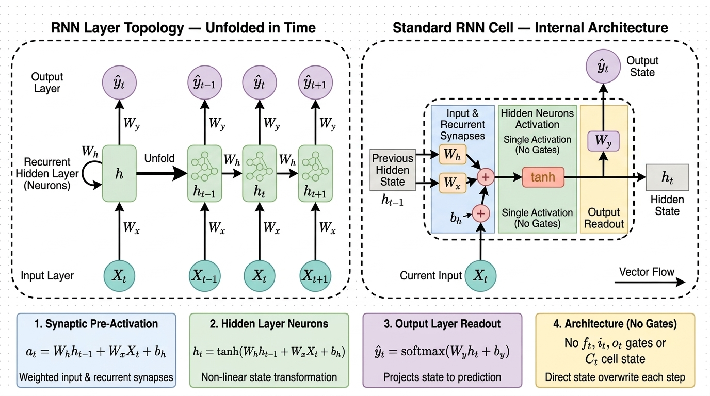
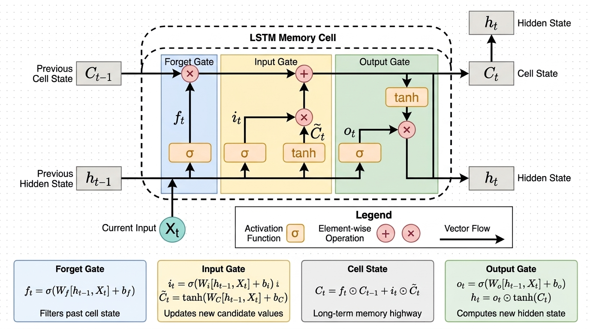

Redes Neuronales Recurrentes (RNN)#
Notación general
\(\mathbb{R}^d\) es el espacio euclídeo de dimensión \(d\); \(\lVert\cdot\rVert_2\) es la norma euclídea y, para matrices, la norma espectral (norma operador inducida): \(\lVert A\rVert_2=\sup_{\lVert x\rVert_2=1}\lVert Ax\rVert_2=\sigma_{\max}(A)\), el mayor valor singular de \(A\).
\(\rho(A)\) es el radio espectral: \(\rho(A)=\max\{|\lambda|:\lambda\text{ valor propio de }A\}\).
\(\odot\) es el producto de Hadamard (elemento a elemento): \((a\odot b)_i=a_ib_i\).
\(\operatorname{diag}(a)\) es la matriz diagonal cuyas entradas diagonales son las de \(a\).
\(\sigma\) denota la sigmoide logística \(\sigma(z)=1/(1+e^{-z})\) salvo que se diga otra cosa; \(\sigma_{\mathrm{sat}}\) denota la función lineal saturada \(\sigma_{\mathrm{sat}}(x)=\min\{1,\max\{0,x\}\}\).
Para vectores \(y\in\mathbb{R}^p\), \(x\in\mathbb{R}^q\), la matriz jacobiana \(\partial y/\partial x\in\mathbb{R}^{p\times q}\) tiene entradas \([\partial y/\partial x]_{ij}=\partial y_i/\partial x_j\).
Motivación: datos secuenciales#
En numerosos problemas de aprendizaje automático, los datos no se presentan como observaciones aisladas, sino como secuencias en las que el orden importa. Para comprender cómo modelarlas, resulta útil partir de una idea que ya conocemos: el peso compartido.
Peso compartido en redes convolucionales#
Una característica esencial de las redes neuronales convolucionales es que utilizan un mismo filtro en diferentes posiciones de la entrada. En lugar de aprender parámetros independientes para cada región, la red comparte los pesos del filtro a lo largo de la imagen.
De esta manera, un mismo detector puede identificar características similares —como bordes o texturas— en distintas ubicaciones.
Ventajas del peso compartido
Eficiencia: reduce el número de parámetros que deben aprenderse.
Reutilización: permite detectar una misma característica en diferentes posiciones.
Flexibilidad: la operación convolucional puede aplicarse a entradas de distintos tamaños.
El número de parámetros de una capa convolucional depende del tamaño y del número de filtros, pero no de las dimensiones espaciales de la imagen.
¿Qué distingue a los datos secuenciales?#
Una secuencia puede representarse como una colección ordenada de vectores:
A diferencia de un conjunto de observaciones tratadas de forma independiente, en una secuencia la posición y el contexto aportan información. Cada elemento puede relacionarse con los que aparecen antes o después de él.
Dominio |
Ejemplo de secuencia |
Papel del orden |
|---|---|---|
Lenguaje |
Palabras de una oración |
«El perro mordió al hombre» y «el hombre mordió al perro» contienen las mismas palabras, pero expresan significados distintos. |
Habla |
Fragmentos de una señal acústica |
La interpretación de un sonido depende, entre otros factores, de los sonidos que lo rodean. |
Finanzas |
Precios observados en el tiempo |
La trayectoria pasada puede aportar información para analizar la evolución futura. |
Important
En una secuencia importa qué se observa, pero también en qué orden ocurre y cómo se relaciona cada observación con las demás.
Convoluciones temporales: una primera aproximación#
El peso compartido también puede utilizarse en el tiempo. En este caso, un filtro se desplaza a lo largo de la secuencia y procesa pequeñas ventanas de observaciones. Esta es la idea detrás de las redes neuronales de retardo temporal (time-delay neural networks, TDNN) [LWH90].
Para una convolución temporal causal con una ventana de longitud \(L\), la salida en el instante \(n\) puede expresarse como:
La salida \(\boldsymbol{y}_n\) depende de la entrada actual y de las \(L-1\) observaciones anteriores incluidas en la ventana. Así, una única capa tiene un campo receptivo finito: no accede directamente a información situada más allá de esa ventana.
Note
El alcance temporal puede ampliarse mediante múltiples capas, filtros más grandes o convoluciones dilatadas. No obstante, para una arquitectura fija, el campo receptivo sigue siendo finito.
Redes recurrentes: incorporar un estado interno#
Las redes neuronales recurrentes (recurrent neural networks, RNN) ofrecen una alternativa para procesar secuencias. En lugar de depender únicamente de una ventana fija, mantienen un estado interno que se actualiza en cada instante:
Elemento |
Interpretación |
|---|---|
\(\boldsymbol{x}_n\) |
Entrada observada en el instante actual. |
\(\boldsymbol{h}_{n-1}\) |
Estado anterior, que contiene información acumulada durante el procesamiento de la secuencia. |
\(\boldsymbol{h}_n\) |
Nuevo estado, obtenido a partir de la entrada actual y del estado anterior. |
\(f\) |
Función de actualización, cuyos parámetros se comparten a lo largo del tiempo. |
De forma conceptual, el estado \(\boldsymbol{h}_n\) puede depender de todas las entradas anteriores. Sin embargo, esto no garantiza que la red conserve o aprenda eficazmente toda esa información: en la práctica, las dependencias de largo alcance pueden ser difíciles de capturar.
Important
Una RNN procesa la secuencia paso a paso y utiliza un estado interno para transportar información del pasado hacia el presente.
Definición de una red neuronal recurrente#
Una red neuronal recurrente (recurrent neural network, RNN) procesa una secuencia de forma progresiva. En cada instante recibe una entrada, actualiza su estado oculto y, cuando la tarea lo requiere, produce una salida.
El estado oculto actúa como una representación de la información acumulada hasta ese momento. Para describir este proceso, comenzamos por definir las variables y los parámetros del modelo.
Variables del modelo#
Símbolo |
Significado |
Espacio |
|---|---|---|
\(\boldsymbol{x}_n\) |
Vector de entrada en el instante \(n\). |
\(\mathbb{R}^{d_x}\) |
\(\boldsymbol{h}_n\) |
Vector de estado oculto o representación interna de la secuencia. |
\(\mathbb{R}^{d_h}\) |
\(\hat{\boldsymbol{y}}_n\) |
Vector de salida predicha por la red. |
\(\mathbb{R}^{d_y}\) |
\(\boldsymbol{y}_n\) |
Vector de salida objetivo o valor verdadero. |
\(\mathbb{R}^{d_y}\) |
Los valores \(d_x\), \(d_h\) y \(d_y\) representan, respectivamente, las dimensiones de la entrada, el estado oculto y la salida.
Note
El estado \(\boldsymbol{h}_n\) suele describirse como la memoria de la red. Esta expresión es útil para interpretarlo, aunque no implica que el estado conserve perfectamente toda la información anterior.
Parámetros de la red#
La RNN utiliza matrices de pesos y vectores de sesgo que se aprenden durante el entrenamiento:
Cada parámetro cumple una función específica:
Parámetro |
Función |
|---|---|
\(U\) |
Transforma la entrada actual antes de incorporarla al estado. |
\(W\) |
Transforma el estado anterior, permitiendo la conexión recurrente. |
\(V\) |
Proyecta el estado oculto al espacio de salida. |
\(\boldsymbol{b}\) |
Es el sesgo de la actualización del estado. |
\(\boldsymbol{c}\) |
Es el sesgo de la capa de salida. |
Compatibilidad de las dimensiones
Con la convención adoptada aquí, \(V \in \mathbb{R}^{d_y \times d_h}\) y, por tanto,
Si se almacena la matriz con dimensiones \(d_h \times d_y\), debe utilizarse su transpuesta en la ecuación de salida: \(V^{\top}\boldsymbol{h}_n\).
Por ejemplo, para un estado de dimensión \(3\) y dos clases, una matriz \(V\) de tamaño \(3 \times 2\) se utiliza como \(V^{\top}\boldsymbol{h}_n\).
Ecuaciones de la RNN#
En cada instante, la red actualiza su estado y calcula una salida mediante:
En estas ecuaciones:
\(f\) es la función de activación del estado oculto. Algunas elecciones habituales son \(\tanh\) y ReLU.
\(g\) es la función de salida, elegida según la tarea. Por ejemplo, puede utilizarse softmax en clasificación.
\(\boldsymbol{h}_0\) es el estado inicial, que en este caso se fija en cero.
Las funciones \(\tanh\) y ReLU actúan componente a componente. En cambio, softmax actúa sobre el vector completo para producir una distribución de probabilidad sobre las clases.
¿Cómo se actualiza la información?
Al recibir \(\boldsymbol{x}_n\), la red combina dos contribuciones:
Información actual: \(U\boldsymbol{x}_n\).
Información proveniente del pasado: \(W\boldsymbol{h}_{n-1}\).
A partir de esta combinación se obtiene el nuevo estado \(\boldsymbol{h}_n\), que se utiliza para calcular la predicción \(\hat{\boldsymbol{y}}_n\).
Por construcción, la salida en el instante \(n\) puede depender de la secuencia observada hasta ese momento. La capacidad de aprovechar información lejana, sin embargo, depende del modelo y de su entrenamiento.
Peso compartido a lo largo del tiempo#
Los parámetros
son los mismos en todos los instantes de la secuencia. Es decir, la red aplica la misma regla de actualización en cada paso, aunque las entradas y los estados cambien.
Esta reutilización permite representar la RNN como una estructura recurrente compacta o como una red desplegada en el tiempo (unfolded).

Fig. 1 Arquitectura de una RNN desplegada en el tiempo, con parámetros compartidos. Véase también [The20].#
La representación desplegada muestra cómo el estado oculto pasa de un instante al siguiente, mientras cada celda recibe su entrada correspondiente.
Por ejemplo, si la entrada es una frase de diez palabras, entonces \(N=10\): cada \(\boldsymbol{x}_n\) representa la palabra correspondiente y el estado se actualiza una vez por cada elemento de la secuencia.
Note
Aunque en el diagrama desplegado aparezcan varias copias de la red, estas no tienen parámetros independientes: todas comparten los mismos pesos y sesgos.
Interpretación como sistema dinámico#
Una RNN también puede interpretarse como un sistema dinámico discreto con entrada. Para verlo, definimos la preactivación del estado como:
La actualización del estado puede escribirse de forma compacta como:
donde la función de transición es:
Desde esta perspectiva, la red recibe una entrada externa \(\boldsymbol{x}_n\) y evoluciona a través de un estado interno \(\boldsymbol{h}_n\). La misma función de transición \(\Phi\) se aplica en cada instante.
Important
La recurrencia conecta el estado actual con el estado anterior; el peso compartido asegura que la regla de transición sea la misma a lo largo de toda la secuencia.
Retropropagación a través del tiempo#
El entrenamiento de una red neuronal recurrente se realiza mediante una adaptación de la retropropagación conocida como retropropagación a través del tiempo (backpropagation through time, BPTT).
Para comprenderla, imaginemos que la RNN se despliega a lo largo de los \(N\) instantes de una secuencia. La estructura resultante puede interpretarse como una red hacia adelante en la que cada etapa:
Recibe una entrada propia \(\boldsymbol{x}_n\).
Actualiza el estado oculto \(\boldsymbol{h}_n\).
Puede producir una salida \(\hat{\boldsymbol{y}}_n\).
Comparte sus parámetros con las demás etapas.
Important
En la red desplegada, cada instante representa una aplicación de la misma transformación recurrente. Las etapas no aprenden parámetros independientes: todas comparten los mismos pesos y sesgos.
Aprendizaje por descenso de gradiente#
Los parámetros de la red se ajustan para minimizar una función de coste \(J\). Una actualización mediante descenso de gradiente se expresa como:
donde \(\eta > 0\) es la tasa de aprendizaje.
Para calcular los gradientes, BPTT recorre la red desplegada en sentido inverso: comienza en el último instante de la secuencia y retrocede hasta el primero. Durante este recorrido, se acumulan las contribuciones de cada instante a los parámetros compartidos.
Función de coste#
Cuando se dispone de una salida objetivo en cada instante, el coste total puede definirse como la suma de las contribuciones temporales:
Aquí, \(J_n\) mide el error de la predicción en el instante \(n\). Por ejemplo, para una tarea de clasificación con entropía cruzada categórica:
donde \(y_{nk}\) y \(\hat{y}_{nk}\) corresponden, respectivamente, a la componente \(k\) del vector objetivo y del vector de probabilidades predichas.
La predicción depende del estado oculto, y este depende tanto de la entrada actual como del estado anterior:
Note
No todas las tareas requieren una pérdida en cada instante. Por ejemplo, en clasificación de secuencias puede utilizarse únicamente una salida final. La expresión anterior describe el caso en que se incluye una contribución \(J_n\) para cada paso temporal.
¿Cómo influye un estado en el coste total?#
El estado oculto \(\boldsymbol{h}_n\) puede afectar al coste de dos maneras:
Influencia directa: interviene en la predicción \(\hat{\boldsymbol{y}}_n\) y, por tanto, en el coste del instante actual \(J_n\).
Influencia indirecta: interviene en el cálculo del estado siguiente \(\boldsymbol{h}_{n+1}\). A través de este, puede afectar a los estados y costes posteriores.
La dependencia temporal puede representarse como:
Important
Un estado no solo contribuye a la predicción del instante en que se calcula: también puede influir en las predicciones futuras mediante la cadena de estados recurrentes.
Recursión del gradiente respecto al estado#
Para calcular la influencia total de \(\boldsymbol{h}_n\) sobre \(J\), aplicamos la regla de la cadena multivariante. Para \(n=1,\dots,N-1\):
En esta expresión se utiliza la convención de gradientes columna. Por ello, cada jacobiano aparece transpuesto al propagar el gradiente hacia atrás.
Contribución |
Interpretación |
|---|---|
Directa |
Mide el efecto de \(\boldsymbol{h}_n\) sobre el coste actual \(J_n\), a través de la salida \(\hat{\boldsymbol{y}}_n\). |
Indirecta |
Recoge el efecto de \(\boldsymbol{h}_n\) sobre los costes futuros, a través del siguiente estado \(\boldsymbol{h}_{n+1}\). |
En el último instante no existen estados posteriores dentro de la secuencia. Por tanto, solo aparece la contribución directa:
Note
En esta arquitectura, \(\hat{\boldsymbol{y}}_n\) interviene directamente en \(J_n\), pero no en los demás términos del coste. Por eso, \(\partial J_n/\partial \hat{\boldsymbol{y}}_n\) coincide con \(\partial J/\partial \hat{\boldsymbol{y}}_n\); la primera notación hace más explícita la contribución local.
¿De dónde surge la recursión?#
Como el coste total es la suma de los costes temporales,
y los costes anteriores al instante \(n\) no dependen de \(\boldsymbol{h}_n\), se tiene:
El término correspondiente a \(m=n\) representa la contribución directa. Para cada \(m>n\), el efecto de \(\boldsymbol{h}_n\) pasa a través del estado siguiente. Por la regla de la cadena:
Al sumar las contribuciones futuras, aparece el gradiente respecto al siguiente estado:
De este modo, el gradiente en un instante se calcula combinando la contribución local con la información propagada desde el futuro.
Pasadas de BPTT#
El cálculo se organiza en dos recorridos complementarios.
Pasada hacia adelante
Con los valores actuales de los parámetros, la red procesa la secuencia en orden y calcula los estados, las salidas y el coste:
Pasada hacia atrás
A partir del último instante, los gradientes se propagan en orden inverso:
Durante esta pasada se calculan y acumulan las contribuciones de los distintos instantes a los gradientes de los parámetros compartidos.
Ciclo de entrenamiento#
En términos generales, el entrenamiento sigue este proceso:
Inicialización: se asignan valores iniciales a los pesos y sesgos. Los pesos suelen inicializarse aleatoriamente; los sesgos pueden inicializarse en cero.
Pasada hacia adelante: se calculan los estados, las predicciones y el coste.
Pasada hacia atrás: BPTT calcula los gradientes a través de la secuencia.
Actualización: los parámetros se ajustan mediante descenso de gradiente u otro optimizador.
Repetición: el proceso continúa hasta completar el entrenamiento o satisfacer un criterio de parada.
Important
La particularidad de BPTT está en que el error se propaga a través de las dependencias temporales, mientras que los gradientes de los parámetros compartidos reúnen las contribuciones de todos los instantes relevantes.
Ejemplo numérico completo de BPTT#
En este ejemplo desarrollaremos el entrenamiento de una red neuronal recurrente sobre una secuencia corta. El propósito es observar, con valores concretos, cómo se conectan la propagación hacia adelante, el cálculo de la pérdida y la retropropagación a través del tiempo.
Recorrido del ejemplo
A lo largo de esta sección realizaremos:
La propagación hacia adelante de la secuencia.
El cálculo de la salida y la pérdida.
La retropropagación de gradientes a través de los dos instantes.
Una actualización de parámetros.
La verificación numérica de los gradientes mediante diferencias finitas.
Datos y configuración de la red#
Consideremos la secuencia «I love», formada por dos palabras. Para el ejemplo, suponemos que la clase verdadera es positiva, representada por la segunda componente del vector de salida.
Cada palabra se representa mediante un embedding de dimensión \(3\):
La red tiene tres neuronas ocultas y dos clases de salida. Sus matrices de pesos son:
Los sesgos y el estado inicial se definen como:
La función de activación del estado oculto es \(\tanh\). La salida se calcula únicamente después de procesar la segunda palabra.
Convención para la matriz de salida
En este ejemplo, \(V\) tiene dimensiones \(3\times 2\). Por tanto, para obtener un vector de dos logits a partir de un estado de dimensión \(3\), utilizamos:
Esta es una convención equivalente a almacenar directamente la matriz de salida con dimensiones \(2\times 3\).
Propagación hacia adelante: primera palabra#
Para procesar «I», calculamos primero la contribución de la entrada:
Como el estado inicial es cero, también se cumple que:
Por tanto, la preactivación del primer estado es:
Aplicamos \(\tanh\) componente a componente para obtener el primer estado oculto:
Propagación hacia adelante: segunda palabra#
Para procesar «love», debemos combinar la nueva entrada con la información contenida en \(\boldsymbol{h}_1\).
La contribución de la entrada es:
La contribución recurrente, calculada a partir del estado anterior, es:
Por ejemplo, su primera componente se obtiene como:
Al sumar la entrada transformada, la contribución recurrente y el sesgo, obtenemos:
El segundo estado oculto es:
Important
El estado \(\boldsymbol{h}_2\) no depende únicamente de «love»: también incorpora la información que llegó desde \(\boldsymbol{h}_1\), calculado al procesar «I».
Salida de la red y cálculo de la pérdida#
Cálculo de los logits#
A partir del estado final, calculamos:
Como \(\boldsymbol{c}=\boldsymbol{0}\), las dos componentes son:
Por tanto:
Probabilidades con softmax#
La función softmax transforma los logits en probabilidades:
Al aplicarla al vector de logits:
La red asigna aproximadamente un 50.32 % a la primera clase y un 49.68 % a la clase positiva.
Entropía cruzada#
La etiqueta verdadera, en representación one-hot, es:
Como la segunda componente corresponde a la clase positiva, la pérdida es:
Entropía cruzada binaria y categórica
Para una probabilidad \(\hat{y}\) de la clase positiva, la entropía cruzada binaria es:
Con una salida softmax de dos clases y una etiqueta one-hot, esta expresión equivale a la entropía cruzada categórica, siempre que \(\hat{y}\) represente la probabilidad de la clase positiva.
Retropropagación: de la pérdida a los logits#
Comenzamos calculando el gradiente de la pérdida respecto a los logits. Sea:
La derivada de softmax puede expresarse mediante la delta de Kronecker \(\delta_{ik}\):
Aplicando la regla de la cadena:
Si \(\boldsymbol{y}\) es una distribución de probabilidad, entonces \(\sum_i y_i=1\) y la expresión se simplifica a:
Esta relación también se cumple con label smoothing, siempre que las componentes del vector objetivo sumen \(1\).
En el ejemplo:
Gradientes de la capa de salida#
Como \(\boldsymbol{z}=V^{\top}\boldsymbol{h}_2+\boldsymbol{c}\), los gradientes respecto a los parámetros de salida son:
Sustituyendo los valores:
El gradiente que llega al estado final es:
Retropropagación por el segundo estado#
Para continuar hacia atrás, debemos atravesar la activación \(\tanh\). Recordemos que:
Definimos el gradiente respecto a la preactivación del segundo estado como:
La regla de la cadena da:
Aquí, \(\odot\) representa la multiplicación componente a componente y \(\boldsymbol{h}_2^{\odot 2}\) contiene los cuadrados de sus componentes.
Dado que:
las contribuciones del segundo instante a los gradientes son:
Retropropagación hacia el primer estado#
El gradiente se transmite desde el segundo estado hasta el primero mediante la matriz recurrente:
Note
En este ejemplo la pérdida se calcula solo al final de la secuencia. Por ello, \(\boldsymbol{h}_1\) no recibe una contribución directa de una pérdida en el primer instante: su contribución llega a través de \(\boldsymbol{h}_2\).
Al retropropagar por \(\tanh\), obtenemos:
Las contribuciones del primer instante son:
La contribución a \(W\) en este instante es nula porque \(\boldsymbol{h}_0=\boldsymbol{0}\).
Acumulación de los gradientes#
Los parámetros \(U\), \(W\) y \(\boldsymbol{b}\) se comparten entre los dos instantes. Por tanto, sus gradientes totales se obtienen sumando las contribuciones temporales:
Para la matriz recurrente:
Para el sesgo oculto:
Important
El gradiente de un parámetro compartido reúne sus contribuciones en todos los instantes en los que participa. Esta acumulación es una característica fundamental de BPTT.
Actualización de los parámetros#
Con una tasa de aprendizaje \(\eta=0.01\), la actualización de la matriz de salida es:
Numéricamente:
Los demás parámetros se actualizan de forma análoga:
Verificación numérica con Python#
La siguiente celda reproduce la propagación hacia adelante, calcula los gradientes analíticos y los compara con aproximaciones obtenidas mediante diferencias finitas centradas.
También realiza una actualización de parámetros y evalúa la pérdida resultante.
import numpy as np
np.set_printoptions(precision=6, suppress=True)
# Entradas y etiqueta
x1 = np.array([0.1, 0.2, 0.1])
x2 = np.array([0.4, 0.5, 0.6])
y = np.array([0.0, 1.0])
h0 = np.zeros(3)
# Parámetros iniciales
params = {
"U": np.array([
[0.1, -0.2, 0.3],
[0.4, 0.1, -0.3],
[0.3, 0.2, -0.1],
]),
"W": np.array([
[ 0.5, -0.4, 0.1],
[-0.1, 0.2, 0.4],
[ 0.2, 0.1, 0.3],
]),
"V": np.array([
[ 0.2, -0.3],
[ 0.4, 0.1],
[-0.2, 0.3],
]),
"b": np.array([0.1, 0.1, 0.1]),
"c": np.array([0.0, 0.0]),
}
def propagacion(params):
"""Calcula estados, probabilidades y pérdida final."""
U, W, V = params["U"], params["W"], params["V"]
b, c = params["b"], params["c"]
a1 = U @ x1 + W @ h0 + b
h1 = np.tanh(a1)
a2 = U @ x2 + W @ h1 + b
h2 = np.tanh(a2)
z = V.T @ h2 + c
# Softmax estable
exp_z = np.exp(z - np.max(z))
y_hat = exp_z / np.sum(exp_z)
# Pérdida de la clase positiva
perdida = -np.log(y_hat[1])
return {
"a1": a1,
"h1": h1,
"a2": a2,
"h2": h2,
"z": z,
"y_hat": y_hat,
"perdida": perdida,
}
def gradientes_bptt(params, resultados):
"""Calcula los gradientes analíticos mediante BPTT."""
W, V = params["W"], params["V"]
h1, h2 = resultados["h1"], resultados["h2"]
# Salida: softmax + entropía cruzada
delta_z = resultados["y_hat"] - y
grad_V = np.outer(h2, delta_z)
grad_c = delta_z
# Retropropagación por el segundo instante
grad_h2 = V @ delta_z
delta_a2 = grad_h2 * (1 - h2**2)
# Retropropagación hacia el primer instante
grad_h1 = W.T @ delta_a2
delta_a1 = grad_h1 * (1 - h1**2)
# Suma de contribuciones temporales
grad_U = np.outer(delta_a1, x1) + np.outer(delta_a2, x2)
grad_W = np.outer(delta_a1, h0) + np.outer(delta_a2, h1)
grad_b = delta_a1 + delta_a2
return {
"U": grad_U,
"W": grad_W,
"V": grad_V,
"b": grad_b,
"c": grad_c,
}
def gradiente_numerico(params, nombre, epsilon=1e-6):
"""Aproxima un gradiente mediante diferencias finitas centradas."""
grad = np.zeros_like(params[nombre])
for indice in np.ndindex(params[nombre].shape):
mas = {k: v.copy() for k, v in params.items()}
menos = {k: v.copy() for k, v in params.items()}
mas[nombre][indice] += epsilon
menos[nombre][indice] -= epsilon
j_mas = propagacion(mas)["perdida"]
j_menos = propagacion(menos)["perdida"]
grad[indice] = (j_mas - j_menos) / (2 * epsilon)
return grad
# Propagación y gradientes
resultados = propagacion(params)
gradientes = gradientes_bptt(params, resultados)
print("Estado h1:", resultados["h1"])
print("Estado h2:", resultados["h2"])
print("Logits:", resultados["z"])
print("Probabilidades:", resultados["y_hat"])
print("Pérdida inicial:", resultados["perdida"])
print("\nVerificación de gradientes")
for nombre in params:
numerico = gradiente_numerico(params, nombre)
error = np.max(np.abs(gradientes[nombre] - numerico))
print(f"{nombre}: error absoluto máximo = {error:.3e}")
# Una actualización por descenso de gradiente
eta = 0.01
params_nuevos = {
nombre: params[nombre] - eta * gradientes[nombre]
for nombre in params
}
print("\nV actualizado:")
print(params_nuevos["V"])
print("Pérdida después de la actualización:",
propagacion(params_nuevos)["perdida"])
Estado h1: [0.099668 0.129273 0.158649]
Estado h2: [0.229811 0.206342 0.327884]
Logits: [0.062922 0.050056]
Probabilidades: [0.503216 0.496784]
Pérdida inicial: 0.6996008461883084
Verificación de gradientes
U: error absoluto máximo = 6.929e-11
W: error absoluto máximo = 7.896e-11
V: error absoluto máximo = 9.570e-11
b: error absoluto máximo = 4.570e-11
c: error absoluto máximo = 1.008e-11
V actualizado:
[[ 0.198844 -0.298844]
[ 0.398962 0.101038]
[-0.20165 0.30165 ]]
Pérdida después de la actualización: 0.6911303535778427
Tip
Los errores entre los gradientes analíticos y numéricos deben ser muy pequeños, salvo por efectos de precisión numérica. Esta comparación ayuda a detectar posibles errores de implementación en la retropropagación.
import numpy as np
np.set_printoptions(precision=6, suppress=True)
# ---------- Datos ----------
U = np.array([[0.1,-0.2,0.3],[0.4,0.1,-0.3],[0.3,0.2,-0.1]])
W = np.array([[0.5,-0.4,0.1],[-0.1,0.2,0.4],[0.2,0.1,0.3]])
V = np.array([[0.2,-0.3],[0.4,0.1],[-0.2,0.3]]) # 3x2 -> salida = V^T h
b = np.full(3, 0.1); c = np.zeros(2)
emb = {"I":[.1,.2,.1], "love":[.4,.5,.6], "this":[.3,.1,.3],
"movie":[.5,.1,-.3], "is":[.2,.3,.2], "terrible":[-.5,-.6,-.7]}
emb = {k: np.array(v) for k, v in emb.items()}
def softmax(z):
e = np.exp(z - z.max()) # restar el máximo evita desbordamiento; no cambia el resultado
return e / e.sum()
def forward(seq, U, W, V, b, c):
hs, As = [np.zeros(3)], [] # h_0 = 0
for w in seq:
a = U @ emb[w] + W @ hs[-1] + b # preactivación a_n
As.append(a); hs.append(np.tanh(a))
z = V.T @ hs[-1] + c # logits
return hs, As, z, softmax(z)
def loss_grads(seq, label, U, W, V, b, c):
hs, As, z, p = forward(seq, U, W, V, b, c)
y = np.eye(2)[label]
L = -np.log(p[label]) # entropía cruzada categórica con one-hot
dz = p - y # dL/dz = yhat - y
dV = np.outer(hs[-1], dz); dc = dz.copy()
dh = V @ dz # dL/dh_N
dU = np.zeros_like(U); dW = np.zeros_like(W); db = np.zeros_like(b)
for n in range(len(seq), 0, -1): # BPTT: n = N, N-1, ..., 1
da = dh * (1 - hs[n]**2) # a través de tanh
dU += np.outer(da, emb[seq[n-1]])
dW += np.outer(da, hs[n-1])
db += da
dh = W.T @ da # gradiente que viaja a h_{n-1}
return L, (dU, dW, dV, db, dc)
# ---------- (i) reproducir las cifras del texto (2 palabras: "I love") ----------
seq = ["I", "love"]
hs, As, z, p = forward(seq, U, W, V, b, c)
print("h1 =", hs[1]); print("h2 =", hs[2]); print("logits z =", z)
print("softmax =", p); print("J_2 =", -np.log(p[1]))
L, (dU, dW, dV, db, dc) = loss_grads(seq, 1, U, W, V, b, c)
print("dJ/dV =\n", dV); print("dJ/dW =\n", dW); print("dJ/dU =\n", dU)
print("dJ/db =", db); print("dJ/dc =", dc)
print("V_nuevo (eta=0.01) =\n", V - 0.01*dV)
# ---------- (ii) validación con diferencias finitas centradas ----------
params = dict(U=U.copy(), W=W.copy(), V=V.copy(), b=b.copy(), c=c.copy())
def f_loss(P): return loss_grads(seq, 1, P["U"], P["W"], P["V"], P["b"], P["c"])[0]
for name, G in zip(["U","W","V","b","c"], [dU, dW, dV, db, dc]):
Gn = np.zeros_like(params[name])
it = np.nditer(params[name], flags=["multi_index"])
for _ in it:
ix = it.multi_index; old = params[name][ix]
params[name][ix] = old + 1e-6; Lp = f_loss(params)
params[name][ix] = old - 1e-6; Lm = f_loss(params)
params[name][ix] = old; Gn[ix] = (Lp - Lm) / 2e-6
print(f"{name}: max|analítico - numérico| = {np.abs(G - Gn).max():.2e}")
# ---------- (iii) TAREA: entrenar con las dos secuencias completas ----------
data = [(["I","love","this","movie"], 1), (["this","movie","is","terrible"], 0)]
P = [U.copy(), W.copy(), V.copy(), b.copy(), c.copy()]
eta = 0.1
print("\nIteración | pérdida total (suma de las dos secuencias)")
for it in range(1, 11):
tot, acc = 0.0, [np.zeros_like(x) for x in P]
for s, lab in data:
Ls, G = loss_grads(s, lab, *P); tot += Ls
acc = [a + g for a, g in zip(acc, G)]
print(f"{it:9d} | {tot:.6f}")
P = [x - eta*a for x, a in zip(P, acc)]
h1 = [0.099668 0.129273 0.158649]
h2 = [0.229811 0.206342 0.327884]
logits z = [0.062922 0.050056]
softmax = [0.503216 0.496784]
J_2 = 0.6996008461883084
dJ/dV =
[[ 0.115645 -0.115645]
[ 0.103834 -0.103834]
[ 0.164997 -0.164997]]
dJ/dW =
[[ 0.023753 0.030808 0.037809]
[ 0.014406 0.018685 0.022931]
[-0.022381 -0.029029 -0.035626]]
dJ/dU =
[[ 0.101248 0.131 0.148912]
[ 0.049076 0.05479 0.077983]
[-0.088431 -0.109495 -0.133343]]
dJ/db = [ 0.297521 0.057146 -0.210638]
dJ/dc = [ 0.503216 -0.503216]
V_nuevo (eta=0.01) =
[[ 0.198844 -0.298844]
[ 0.398962 0.101038]
[-0.20165 0.30165 ]]
U: max|analítico - numérico| = 6.93e-11
W: max|analítico - numérico| = 7.90e-11
V: max|analítico - numérico| = 9.57e-11
b: max|analítico - numérico| = 4.57e-11
c: max|analítico - numérico| = 1.01e-11
Iteración | pérdida total (suma de las dos secuencias)
1 | 1.381409
2 | 1.343564
3 | 1.306193
4 | 1.268322
5 | 1.229255
6 | 1.188571
7 | 1.146106
8 | 1.101915
9 | 1.056228
10 | 1.009394
Lectura del resultado. Las diferencias entre gradiente analítico y numérico son del orden de \(10^{-10}\), lo que respalda numéricamente las fórmulas del ejemplo de BPTT. Con \(\eta=0.1\) y las dos secuencias completas, la pérdida total pasa de \(\approx1.3814\) en la iteración 1 a \(\approx1.0094\) en la iteración 10: decrece monótonamente, como se pedía en la tarea.
Nota sobre la secuencia negativa
La segunda secuencia, «This movie is terrible», usa la palabra «This» con mayúscula; como solo hay un embedding para «this», se tomó el mismo vector. La etiqueta es la clase \(0\).
Pérdida y gradientes: justificación de \(\hat{\boldsymbol{y}}-\boldsymbol{y}\)#
La derivación de \(\partial L/\partial z_k=\hat y_k-y_k\) se presentó en el ejemplo de BPTT; aquí se complementa con el jacobiano de softmax en forma matricial.
Jacobiano de softmax. De \(\partial\hat y_i/\partial z_k=\hat y_i(\delta_{ik}-\hat y_k)\) se obtiene
Esta matriz es simétrica, semidefinida positiva y tiene a \(\mathbf{1}\) en su núcleo: \((\operatorname{diag}(\hat{\boldsymbol{y}})-\hat{\boldsymbol{y}}\hat{\boldsymbol{y}}^{\top})\mathbf{1}=\hat{\boldsymbol{y}}-\hat{\boldsymbol{y}}(\hat{\boldsymbol{y}}^{\top}\mathbf{1})=\hat{\boldsymbol{y}}-\hat{\boldsymbol{y}}=\boldsymbol{0}\) (porque \(\sum_i\hat y_i=1\)). Esto refleja que el softmax es invariante a sumar una constante a todos los logits.
Desvanecimiento y explosión de gradientes#
Argumento heurístico (caso escalar)#
El desvanecimiento/explosión de gradientes ya apareció en backpropagation estándar. En BPTT es especialmente agresivo porque \(N\) puede ser grande (por ejemplo \(N=100\)) y los mismos pesos se multiplican una y otra vez.
Para ver la naturaleza multiplicativa, simplifiquemos: estado, salida y \(W\) escalares (\(h_n\), \(\hat y_n\), \(w\)). La recursión (2) queda
Con \(f=\tanh\) y \(h_{n+1}=\tanh(wh_n+ux_{n+1}+b)\), la derivada de \(\tanh\) es \(1-\tanh^2\), luego
Iterando una vez más:
Como \(|1-h^2|\le1\), los factores derivados de \(\tanh\) pueden atenuar el gradiente. Un producto se desvanece, por ejemplo, si sus factores están uniformemente acotados por una constante menor que \(1\). Que cada factor sea menor que \(1\) no basta por sí solo. Si \(|w|>1\), el producto completo puede crecer; su comportamiento depende de la trayectoria.
Inestabilidad del gradiente en una RNN#
Theorem 1 (Inestabilidad del gradiente en una RNN)
Sea \(\boldsymbol{h}_n=\sigma(\boldsymbol{a}_n)\) con \(\boldsymbol{a}_n=W\boldsymbol{h}_{n-1}+U\boldsymbol{x}_n+\boldsymbol{b}\), donde \(\sigma:\mathbb{R}\to\mathbb{R}\) es de clase \(C^1\) y actúa componente a componente, con \(|\sigma'(t)|\le\gamma\) para todo \(t\in\mathbb{R}\). Entonces:
(Cota general.) Para \(k<n\),
\[\left\lVert\frac{\partial\boldsymbol{h}_n}{\partial\boldsymbol{h}_k}\right\rVert_2\le(\gamma\lVert W\rVert_2)^{\,n-k}.\]En particular, si \(\gamma\lVert W\rVert_2<1\) el jacobiano decae exponencialmente. La condición \(\gamma\lVert W\rVert_2>1\) es necesaria para que esta cota permita crecimiento.
(Caso lineal, \(\sigma=\mathrm{id}\).) Para todo \(m\ge1\), \(\lVert W^m\rVert_2\ge\rho(W)^m\). Así, si \(\rho(W)>1\), \(\lVert W^m\rVert_2\to\infty\) exponencialmente. Si \(\rho(W)<1\), para todo \(r\in(\rho(W),1)\) existe \(C_r<\infty\) con \(\lVert W^m\rVert_2\le C_r\,r^m\) para todo \(m\ge0\).
(Memoria estable \(\Rightarrow\) desvanecimiento.) Sea \(f:\mathbb{R}^d\to\mathbb{R}^d\) de clase \(C^1\), \(\boldsymbol{h}_n=f(\boldsymbol{h}_{n-1})\), y \(\boldsymbol{h}^\ast\) un punto fijo (\(f(\boldsymbol{h}^\ast)=\boldsymbol{h}^\ast\)) con \(\rho(Df(\boldsymbol{h}^\ast))<1\). Entonces existen un entorno \(\mathcal{N}\) de \(\boldsymbol{h}^\ast\) positivamente invariante y constantes \(C>0\), \(r\in(0,1)\) tales que, si \(\boldsymbol{h}_k\in\mathcal{N}\), entonces para todo \(n\ge k\)
\[\left\lVert\frac{\partial\boldsymbol{h}_n}{\partial\boldsymbol{h}_k}\right\rVert_2\le C\,r^{\,n-k}.\]
Fuentes y alcance (Pascanu, Mikolov y Bengio, 2013)
Fuentes. R. Pascanu, T. Mikolov, Y. Bengio, «On the difficulty of training recurrent neural networks», Proc. 30th ICML, PMLR 28(3):1310-1318 (2013) [PMB13]; Y. Bengio, P. Simard, P. Frasconi, «Learning long-term dependencies with gradient descent is difficult», IEEE Trans. Neural Networks 5(2):157-166 (1994) [BSF94].
Qué dice el artículo. Pascanu et al. dan una condición suficiente para el desvanecimiento: si el mayor valor singular \(\lambda_1\) de \(W_{\mathrm{rec}}\) cumple \(\lambda_1<1/\gamma\), entonces el gradiente se desvanece; y una condición necesaria para la explosión: \(\lambda_1>1/\gamma\) (con \(\gamma=1\) para \(\tanh\) y \(\gamma=1/4\) para la sigmoide). La parte (1) es exactamente esa afirmación. Además, en el mismo artículo los autores usan el radio espectral (autovalor de módulo mayor) para el caso lineal, que es la parte (2).
Alcance. La condición \(\gamma\lVert W\rVert_2\le1\) impide el crecimiento de la cota del jacobiano de estado para este modelo. En cambio, \(\lVert W\rVert_2>1\) puede coexistir con \(\rho(W)<1\): en matrices no normales es posible una amplificación transitoria seguida de decaimiento. La parte sobre el punto fijo es una versión simplificada del argumento de latching robusto de Bengio et al.
Proof. Preliminares.
(P1) Jacobiano de un paso. Como \(\boldsymbol{h}_i=\sigma(\boldsymbol{a}_i)\) con \(\boldsymbol{a}_i=W\boldsymbol{h}_{i-1}+U\boldsymbol{x}_i+\boldsymbol{b}\) y \(\sigma\) actúa componente a componente, la regla de la cadena da, para cada \(p,q\),
Es decir, \(\dfrac{\partial\boldsymbol{h}_i}{\partial\boldsymbol{h}_{i-1}}=D_iW\), con \(D_i:=\operatorname{diag}\big(\sigma'(a_{i,1}),\dots,\sigma'(a_{i,d_h})\big)\).
(P2) Norma de una matriz diagonal. La norma espectral de una matriz diagonal es el máximo valor absoluto de sus entradas diagonales. En efecto, si \(D=\operatorname{diag}(\delta_1,\dots,\delta_d)\) y \(\lVert x\rVert_2=1\), entonces \(\lVert Dx\rVert_2^2=\sum_j\delta_j^2x_j^2\le\max_j\delta_j^2\sum_jx_j^2=\max_j\delta_j^2\), con igualdad para \(x=e_{j^\ast}\) (el vector canónico del índice donde se alcanza el máximo). Por tanto \(\lVert D_i\rVert_2=\max_p|\sigma'(a_{i,p})|\le\gamma\).
(P3) Submultiplicatividad. La norma espectral es una norma inducida: \(\lVert AB\rVert_2\le\lVert A\rVert_2\lVert B\rVert_2\). Prueba: \(\lVert ABx\rVert_2\le\lVert A\rVert_2\lVert Bx\rVert_2\le\lVert A\rVert_2\lVert B\rVert_2\lVert x\rVert_2\).
(1) Por la regla de la cadena aplicada \(n-k\) veces (cada \(\boldsymbol{h}_i\) depende de \(\boldsymbol{h}_{i-1}\) y, por (P1), el jacobiano de la composición es el producto de jacobianos):
(el producto se escribe en orden decreciente de \(i\) de izquierda a derecha). Aplicando (P3) \(n-k-1\) veces y luego (P2):
Si \(\gamma\lVert W\rVert_2<1\) la cota es una progresión geométrica de razón \(<1\). Si \(\gamma\lVert W\rVert_2\le1\) la cota no crece; por tanto, para que la cota permita crecimiento hace falta \(\gamma\lVert W\rVert_2>1\).
Contexto: descomposición del gradiente. Con \(J=J(\boldsymbol{h}_N)\) y \(\partial^{+}\boldsymbol{h}_k/\partial\theta\) la derivada inmediata de \(\boldsymbol{h}_k\) respecto de \(\theta\) (tratando \(\boldsymbol{h}_{k-1}\) como constante), la regla de la cadena da
Si \(\gamma\lVert W\rVert_2<1\) y las demás derivadas relevantes están acotadas, las contribuciones que recorren muchos pasos quedan sujetas a atenuación exponencial. La magnitud del gradiente total depende también de los demás factores.
(2) Desigualdad \(\rho(W)^m\le\lVert W^m\rVert_2\). Sea \(\lambda\) un valor propio de \(W\) con \(|\lambda|=\rho(W)\) y \(v\in\mathbb{C}^d\) un vector propio asociado, \(\lVert v\rVert_2=1\). Entonces \(W^mv=\lambda^mv\), de donde \(|\lambda|^m=\lVert W^mv\rVert_2\le\lVert W^m\rVert_2\) (la norma inducida en \(\mathbb{C}^d\) de una matriz real coincide con la de \(\mathbb{R}^d\), porque ambas son \(\sigma_{\max}\)). Por tanto \(\rho(W)^m=|\lambda|^m\le\lVert W^m\rVert_2\). Si \(\rho(W)>1\), \(\rho(W)^m\to\infty\) exponencialmente.
Caso \(\rho(W)<1\). Se usa la fórmula de Gelfand: para toda norma submultiplicativa, \(\rho(W)=\lim_{m\to\infty}\lVert W^m\rVert^{1/m}\) (Gelfand, 1941). Dado \(r\in(\rho(W),1)\), existe \(m_0\) tal que \(\lVert W^m\rVert_2^{1/m}<r\) para todo \(m\ge m_0\), es decir, \(\lVert W^m\rVert_2<r^m\) para \(m\ge m_0\). Sea \(C_r:=\max\{1,\max_{0\le m<m_0}\lVert W^m\rVert_2\,r^{-m}\}<\infty\) (máximo de finitos números). Entonces \(\lVert W^m\rVert_2\le C_rr^m\) para todo \(m\ge0\).
Observación importante. La constante \(C_r\) puede ser grande: con \(W\) no normal, \(\lVert W^m\rVert_2\) crece al principio aunque \(\rho(W)<1\). Ejemplo: \(W=\begin{bmatrix}0.5&5\\0&0.5\end{bmatrix}\) tiene \(\rho(W)=0.5\) pero \(\lVert W\rVert_2\approx5.05\); la celda de abajo muestra \(\lVert W^m\rVert_2=5.05,\,5.01,\,3.75,\,2.50,\dots\) (decrece sólo a partir de \(m\approx3\)).
(3) Sea \(A:=Df(\boldsymbol{h}^\ast)\), \(\rho(A)<1\).
Paso 3.1 (norma adaptada). Lema. Para toda matriz \(A\) y todo \(\epsilon>0\) existe una norma en \(\mathbb{R}^d\), \(\lVert\cdot\rVert_\ast\), cuya norma inducida satisface \(\lVert A\rVert_\ast\le\rho(A)+\epsilon\).
Prueba del lema. Sea \(s:=\rho(A)+\epsilon\) y defina
La serie converge: por Gelfand existe \(C\) con \(\lVert A^j\rVert_2\le C(\rho(A)+\epsilon/2)^j\), así que \(s^{-2j}\lVert A^jx\rVert_2^2\le C^2\big(\tfrac{\rho(A)+\epsilon/2}{\rho(A)+\epsilon}\big)^{2j}\lVert x\rVert_2^2\), una serie geométrica convergente. \(\lVert\cdot\rVert_\ast\) proviene de un producto interno (\(\langle x,y\rangle_\ast=\sum_js^{-2j}\langle A^jx,A^jy\rangle\)), por lo que es una norma (el término \(j=0\) garantiza \(\lVert x\rVert_\ast\ge\lVert x\rVert_2\), luego definida positiva). Además
luego \(\lVert A\rVert_\ast\le s=\rho(A)+\epsilon\). \(\blacksquare\) (lema)
Paso 3.2 (contracción local). Fije \(\epsilon>0\) con \(\rho(A)+2\epsilon<1\) y sea \(r:=\rho(A)+2\epsilon\). Como \(f\) es \(C^1\), \(Df\) es continua; por equivalencia de normas en \(\mathbb{R}^d\) (existen \(c_1,c_2>0\) con \(c_1\lVert x\rVert_2\le\lVert x\rVert_\ast\le c_2\lVert x\rVert_2\)), la aplicación \(\boldsymbol{h}\mapsto\lVert Df(\boldsymbol{h})\rVert_\ast\) es continua, y en \(\boldsymbol{h}^\ast\) vale \(\lVert A\rVert_\ast\le\rho(A)+\epsilon<r\). Por continuidad existe \(\delta>0\) tal que
Paso 3.3 (invarianza). \(\mathcal{N}\) es una bola cerrada (convexa) en \(\lVert\cdot\rVert_\ast\). Para \(\boldsymbol{h}\in\mathcal{N}\), por el teorema del valor medio en forma integral y \(f(\boldsymbol{h}^\ast)=\boldsymbol{h}^\ast\):
El segmento \(\boldsymbol{h}^\ast+t(\boldsymbol{h}-\boldsymbol{h}^\ast)\) está en \(\mathcal{N}\) (convexidad), así que \(\lVert f(\boldsymbol{h})-\boldsymbol{h}^\ast\rVert_\ast\le r\lVert\boldsymbol{h}-\boldsymbol{h}^\ast\rVert_\ast\le\delta\). Luego \(f(\mathcal{N})\subset\mathcal{N}\): \(\mathcal{N}\) es positivamente invariante, y toda órbita que entre en \(\mathcal{N}\) se queda en \(\mathcal{N}\).
Paso 3.4 (cota del producto). Si \(\boldsymbol{h}_k\in\mathcal{N}\), entonces \(\boldsymbol{h}_i\in\mathcal{N}\) para todo \(i\ge k\). Como \(\boldsymbol{h}_i=f(\boldsymbol{h}_{i-1})\), la regla de la cadena da \(\partial\boldsymbol{h}_n/\partial\boldsymbol{h}_k=\prod_{i=n-1}^{k}Df(\boldsymbol{h}_i)\) (son \(n-k\) factores) y, por submultiplicatividad en \(\lVert\cdot\rVert_\ast\),
Paso 3.5 (volver a \(\lVert\cdot\rVert_2\)). Para toda matriz \(B\): \(\lVert B\rVert_2\le(c_2/c_1)\lVert B\rVert_\ast\) (porque \(\lVert Bx\rVert_2\le c_1^{-1}\lVert Bx\rVert_\ast\le c_1^{-1}\lVert B\rVert_\ast\lVert x\rVert_\ast\le c_1^{-1}c_2\lVert B\rVert_\ast\lVert x\rVert_2\)). Tomando \(C:=c_2/c_1\) se obtiene \(\lVert\partial\boldsymbol{h}_n/\partial\boldsymbol{h}_k\rVert_2\le C\,r^{n-k}\). \(\square\)
Interpretación
Hay un compromiso estructural entre memoria larga y entrenabilidad: en el modelo de punto fijo estable estudiado, almacenar información cerca de una cuenca de atracción contractiva hace que el jacobiano se atenúe. Este mecanismo no describe todas las formas posibles de memoria robusta. Es el motor histórico de la LSTM (Teorema Theorem 2), de la inicialización ortogonal y de los diseños con espectro del jacobiano controlado (por ejemplo, las Lipschitz RNN de Erichson et al., ICLR 2021).
Ejercicio (resuelto): radios espectrales \(0.9\), \(1.0\), \(1.1\) con \(\tanh\)
Enunciado. Para \(\tanh\) y \(W\) con \(\rho(W)=0.9,\,1.0,\,1.1\) calcule \(\lVert\partial\boldsymbol{h}_N/\partial\boldsymbol{h}_0\rVert_2\) para \(N=10,50,100\) y compárelo con la cota (1). Analice por qué en la trayectoria simulada con \(\rho(W)=1.1\) el gradiente no explota y explique por qué esa observación no es una garantía general.
Resolución. Ver la celda de abajo. Resultado típico (semilla fija): para \(\rho(W)=1.1\) y \(N=100\), \(\lVert\partial\boldsymbol{h}_N/\partial\boldsymbol{h}_0\rVert_2\approx10^{-4}\) (no explota), mientras que la cota (1) vale \(\approx10^{29}\) y el caso lineal \(\rho(W)^N=1.1^{100}\approx1.4\times10^{4}\).
Explicación. En la trayectoria simulada, la atenuación de las derivadas contribuye a que el gradiente disminuya. Sin embargo, un estado acotado no garantiza un gradiente acotado: si \(h_t=\tanh(1.1h_{t-1})\) y \(h_0=0\), entonces \(h_t=0\) para todo \(t\) pero \(\partial h_N/\partial h_0=1.1^N\). Cerca del origen la celda ilustra un régimen aproximadamente lineal: con la semilla usada se obtiene \(\lVert J\rVert_2\approx5.55,\,13.22,\,83.31\) para \(N=10,20,40\).
import numpy as np
np.set_printoptions(precision=4, suppress=True)
rng = np.random.default_rng(1)
def rand_W(n, rho):
A = rng.normal(size=(n, n))
return A * rho / np.max(np.abs(np.linalg.eigvals(A))) # reescala para fijar el radio espectral
# ---------- Ejercicio: ||dh_N/dh_0||_2 con tanh y rho(W) in {0.9, 1.0, 1.1} ----------
n = 10
print(f"{'rho':>5} {'N':>4} {'||dh_N/dh_0||_2':>18} {'cota (gamma||W||)^N':>22} {'rho^N':>12}")
for rho in (0.9, 1.0, 1.1):
W = rand_W(n, rho); Ux = rng.normal(size=n)*0.1; b = rng.normal(size=n)*0.1
for N in (10, 50, 100):
h = rng.normal(size=n)*0.1; J = np.eye(n)
for _ in range(N):
a = W @ h + Ux + b; h = np.tanh(a)
D = np.diag(1 - np.tanh(a)**2) # sigma'(a) = 1 - tanh^2(a), gamma = 1
J = D @ W @ J # jacobiano acumulado
print(f"{rho:5.1f} {N:4d} {np.linalg.norm(J,2):18.3e} {np.linalg.norm(W,2)**N:22.3e} {rho**N:12.3e}")
# ---------- Cerca del origen (regimen lineal) con rho = 1.1: sí hay crecimiento ----------
A = rng.normal(size=(8, 8)); W = A * 1.1 / np.max(np.abs(np.linalg.eigvals(A)))
h = np.zeros(8); J = np.eye(8); hist = []
for _ in range(40):
a = W @ h + 1e-9*np.ones(8); h = np.tanh(a)
J = np.diag(1 - np.tanh(a)**2) @ W @ J; hist.append(np.linalg.norm(J, 2))
print("\nRégimen lineal (h~0), rho=1.1: ||J||_2 en N=10,20,40 =", np.round([hist[9], hist[19], hist[39]], 2),
" rho^N =", np.round([1.1**10, 1.1**20, 1.1**40], 2))
# ---------- Matriz no normal: rho<1 pero ||W^m||_2 crece de forma transitoria ----------
Wn = np.array([[0.5, 5.0], [0.0, 0.5]])
print("\nrho(W) =", max(abs(np.linalg.eigvals(Wn))), " ||W||_2 =", round(np.linalg.norm(Wn, 2), 3))
print("||W^m||_2, m=1..10:", [round(np.linalg.norm(np.linalg.matrix_power(Wn, m), 2), 3) for m in range(1, 11)])
print("||W^m||^(1/m) -> rho (Gelfand):", [round(np.linalg.norm(np.linalg.matrix_power(Wn, m), 2)**(1/m), 4) for m in (1, 5, 20, 100, 400)])
# ---------- Norma adaptada: ||A||_* <= rho + eps ----------
rho_, eps = 0.5, 0.1; s = rho_ + eps
P = np.zeros((2, 2)); M = np.eye(2)
for _ in range(400):
P += (M.T @ M) / s**(2*_); M = M @ Wn
L = np.linalg.cholesky(P) # ||x||_* = ||L^T x||_2
print("||A||_* =", round(np.linalg.norm(L.T @ Wn @ np.linalg.inv(L.T), 2), 6), " <= s =", s)
rho N ||dh_N/dh_0||_2 cota (gamma||W||)^N rho^N
0.9 10 4.698e-01 2.249e+02 3.487e-01
0.9 50 2.674e-03 5.749e+11 5.154e-03
0.9 100 3.709e-06 3.305e+23 2.656e-05
1.0 10 8.484e-01 1.150e+02 1.000e+00
1.0 50 7.927e-02 2.008e+10 1.000e+00
1.0 100 7.467e-03 4.031e+20 1.000e+00
1.1 10 1.248e+00 8.471e+02 2.594e+00
1.1 50 2.713e-02 4.362e+14 1.174e+02
1.1 100 1.379e-04 1.902e+29 1.378e+04
Régimen lineal (h~0), rho=1.1: ||J||_2 en N=10,20,40 = [ 5.55 13.22 83.31] rho^N = [ 2.59 6.73 45.26]
rho(W) = 0.5 ||W||_2 = 5.05
||W^m||_2, m=1..10: [np.float64(5.05), np.float64(5.012), np.float64(3.754), np.float64(2.502), np.float64(1.563), np.float64(0.938), np.float64(0.547), np.float64(0.313), np.float64(0.176), np.float64(0.098)]
||W^m||^(1/m) -> rho (Gelfand): [np.float64(5.0495), np.float64(1.0934), np.float64(0.6517), np.float64(0.5358), np.float64(0.5105)]
||A||_* = 0.599927 <= s = 0.6
Remedios prácticos#
Truncar BPTT a un número limitado de pasos (truncated BPTT): reduce el coste, pero limita la propagación del gradiente hacia dependencias más lejanas.
Explorar activaciones como ReLU, teniendo presente que no eliminan por sí solas el problema: el comportamiento depende también de los pesos y la trayectoria.
Recorte de gradiente (gradient clipping): si \(\lVert\nabla J\rVert>\tau\) para un umbral \(\tau\), reescalar \(\nabla J\leftarrow\tau\,\nabla J/\lVert\nabla J\rVert\) (Pascanu et al., 2013).
Sustituir la RNN estándar por una estructura alternativa que maneje mejor las dependencias largas (LSTM, GRU).
Observation 1
RNN profundas. Además de la RNN básica con una sola capa de estados existen extensiones con varias capas de estados apiladas (véase [PGCB13]).
RNN bidireccionales. Hay dos variables de estado: \(\overset{\rightarrow}{\boldsymbol{h}}\), que se propaga hacia adelante, y \(\overset{\leftarrow}{\boldsymbol{h}}\), que se propaga hacia atrás; las salidas dependen tanto del pasado como del futuro (véase [GMH13]).
Red de memoria a largo plazo (LSTM)#
Observation 2
La idea clave de la LSTM, propuesta en el artículo seminal de Hochreiter y Schmidhuber (1997) [HS97], es la celda de estado (cell state), que puede favorecer el flujo de gradientes en dependencias de largo plazo, aunque no elimina todos los problemas de desvanecimiento o explosión.
Una LSTM controla el flujo de información que entra y sale de la memoria mediante puertas (gates), implementadas con la no linealidad sigmoide y un multiplicador.
Algorítmicamente, una puerta es una ponderación del flujo de información con pesos en \([0,1]\) que dependen de las variables involucradas: la ponderación se decide en contexto. Así la red puede olvidar información que ya no es útil.
Ecuaciones de la celda LSTM#
La unidad en el instante \(n\) recibe \(\boldsymbol{x}_n\), \(\boldsymbol{s}_{n-1}\) (celda de estado) y \(\boldsymbol{h}_{n-1}\) (estado oculto) y entrega \(\boldsymbol{s}_n,\boldsymbol{h}_n\) a la siguiente etapa.


Fig. 2 Arquitectura de una celda LSTM: puertas, memoria y estado oculto. En el diagrama, \(c_t\) corresponde a \(\boldsymbol{s}_n\) en las ecuaciones siguientes; véase [The20].#
Aquí \(\circ=\odot\) es el producto de Hadamard y \(\sigma\) la sigmoide logística.
Cuatro bloques de parámetros, un mismo patrón
Cada una de las cuatro primeras ecuaciones es una capa densa con el mismo patrón «\(U^{\ast}\boldsymbol{x}_n+W^{\ast}\boldsymbol{h}_{n-1}+\boldsymbol{b}^{\ast}\)» con parámetros propios; lo que difiere es la activación: sigmoide para las tres puertas \(\boldsymbol{f},\boldsymbol{i},\boldsymbol{o}\) (valores en \((0,1)\), ponderan) y \(\tanh\) para el candidato (valores en \((-1,1)\), es información).
Función de cada elemento#
Puerta de olvido \(\boldsymbol{f}\). Decide qué parte de la memoria vieja se conserva: valores cercanos a \(0\) borran, cercanos a \(1\) conservan.
Puerta de entrada \(\boldsymbol{i}\). Decide cuánto del candidato se escribe.
Candidato \(\tilde{\boldsymbol{s}}\). Información nueva propuesta, construida con el presente \(\boldsymbol{x}_n\) y con \(\boldsymbol{h}_{n-1}\).
Celda de estado \(\boldsymbol{s}_n\). Memoria de largo plazo: suma de la memoria vieja filtrada y la información nueva filtrada.
Puerta de salida \(\boldsymbol{o}\). Decide qué parte de la memoria se expone al exterior.
Estado oculto \(\boldsymbol{h}_n\). Salida de la celda; es el nuevo «pasado de corto plazo».
Para empatar con el resto del capítulo (y con la notación habitual en la literatura) en lo que sigue se usa también \(c_t:=\boldsymbol{s}_n\) para la celda de estado y \(g_t:=\tilde{\boldsymbol{s}}\) para el candidato.
Flujo de información, paso a paso#
Paso 1, olvidar: \(\boldsymbol{f}\odot\boldsymbol{c}_{t-1}\).
Paso 2, escribir: \(\boldsymbol{i}\odot\boldsymbol{g}_t\).
Paso 3, actualizar la memoria: \(\boldsymbol{c}_t=\boldsymbol{f}\odot\boldsymbol{c}_{t-1}+\boldsymbol{i}\odot\boldsymbol{g}_t\). Esta suma es el camino aditivo del pasado al futuro: la memoria vieja pasa multiplicada solo por \(\boldsymbol{f}\), sin atravesar una no linealidad en cada paso.
Paso 4, leer: \(\boldsymbol{h}_t=\boldsymbol{o}\odot\tanh(\boldsymbol{c}_t)\).
Ejemplo numérico: celda de dos componentes#
Escenario. El componente 1 es el tema general (largo plazo, conviene conservarlo); el componente 2 es un detalle de la frase anterior (ya no sirve). Las puertas ya se calcularon:
Variable |
Componente 1 (tema) |
Componente 2 (detalle) |
|---|---|---|
Memoria vieja \(c_{t-1}\) |
\(2.0\) |
\(-1.0\) |
Puerta de olvido \(f_t\) |
\(0.9\) |
\(0.1\) |
Puerta de entrada \(i_t\) |
\(0.2\) |
\(0.8\) |
Candidato \(g_t\) |
\(0.5\) |
\(1.0\) |
Puerta de salida \(o_t\) |
\(0.9\) |
\(0.2\) |
El valor \(g_{t,2}=1.0\) es una idealización o redondeo: para argumentos finitos, \(\tanh\) toma valores estrictamente entre \(-1\) y \(1\).
Paso 1. \(f_t\odot c_{t-1}=[0.9\cdot2.0,\ 0.1\cdot(-1.0)]=[1.8,\ -0.1]\). Paso 2. \(i_t\odot g_t=[0.2\cdot0.5,\ 0.8\cdot1.0]=[0.1,\ 0.8]\). Paso 3. \(c_t=[1.8+0.1,\ -0.1+0.8]=[1.9,\ 0.7]\). Paso 4. \(\tanh(c_t)=[\tanh1.9,\tanh0.7]\approx[0.956237,\ 0.604368]\) y \(h_t=[0.9\cdot0.956237,\ 0.2\cdot0.604368]\approx[0.860614,\ 0.120874]\).
(Verificado por código en la celda siguiente.) La celda expone casi todo el tema y oculta casi todo el detalle nuevo, aunque lo guardó en \(c_t\).
import numpy as np # NumPy para operar con vectores
c_prev = np.array([2.0, -1.0]) # memoria vieja c_{t-1}: [tema, detalle]
f_t = np.array([0.9, 0.1]) # puerta de olvido: cuánto de la memoria vieja se conserva
i_t = np.array([0.2, 0.8]) # puerta de entrada: cuánto del candidato se escribe
g_t = np.array([0.5, 1.0]) # candidato: información nueva propuesta
o_t = np.array([0.9, 0.2]) # puerta de salida: cuánto de la memoria se expone
olvidado = f_t * c_prev # Paso 1
escrito = i_t * g_t # Paso 2
c_t = olvidado + escrito # Paso 3
h_t = o_t * np.tanh(c_t) # Paso 4
print("Paso 1 (olvidado):", olvidado)
print("Paso 2 (escrito): ", escrito)
print("Paso 3 (c_t): ", c_t)
print("tanh(c_t): ", np.tanh(c_t).round(6))
print("Paso 4 (h_t): ", h_t.round(6))
# Variante: f_t = [0.1, 0.1] -> el tema se pierde
c_alt = np.array([0.1, 0.1]) * c_prev + escrito
print("\nCon f=[0.1,0.1]: c_t =", c_alt, " (el tema pasa de 2.0 a", c_alt[0], ")")
Paso 1 (olvidado): [ 1.8 -0.1]
Paso 2 (escrito): [0.1 0.8]
Paso 3 (c_t): [1.9 0.7]
tanh(c_t): [0.9562 0.6044]
Paso 4 (h_t): [0.8606 0.1209]
Con f=[0.1,0.1]: c_t = [0.3 0.7] (el tema pasa de 2.0 a 0.30000000000000004 )
Note
Experimento sugerido. Cambie \(f_t\) a \([0.1,\,0.1]\) y recalcule \(c_t\). El tema pasa de \(2.0\) a \(0.3\): se pierde casi por completo. Eso ilustra por qué la puerta de olvido es la clave de la memoria de largo plazo.
Observation 3
La celda de estado \(\boldsymbol{s}\) transmite información directamente del instante anterior al siguiente. La puerta de olvido \(\boldsymbol{f}\in(0,1)^{d}\) la pondera según la entrada actual y las variables ocultas previas. Luego se añade la nueva información \(\tilde{\boldsymbol{s}}\), controlada por la puerta de entrada \(\boldsymbol{i}\). Así el pasado llega al futuro por un camino aditivo.
Esta memoria explota mejor las dependencias de largo alcance que una RNN básica. \(\boldsymbol{h}_n\) tiene dos usos: viajar a la etapa siguiente y alimentar la predicción \(\hat{\boldsymbol{y}}_n\) (por ejemplo, vía softmax, como en Ec. (1)).
Variantes y aplicaciones#
Existen muchas variantes de la LSTM. Estudios comparativos extensos: Greff et al. (2016) [GSK+17], Jozefowicz, Zaremba y Sutskever (2015) [JZS15]. Aplicaciones: modelado del lenguaje [SMH11]; traducción automática [LYLZ14]; reconocimiento del habla [GJ14]; descripción de imágenes [KFF15]; dinámica temporal de redes cerebrales en fMRI [seo19]; pronóstico de volatilidad de Bitcoin [pra23].
En procesamiento de lenguaje, la entrada es una secuencia de palabras codificadas numéricamente (punteros al diccionario) y la salida es la secuencia de palabras que se quiere predecir; en el entrenamiento se toma \(\boldsymbol{y}_n=\boldsymbol{x}_{n+1}\), es decir, la red se entrena como predictor no lineal.
Flujo de error en la celda LSTM#
La Observación Observation 3 afirma que la suma aditiva es un «camino directo» del pasado al futuro. El teorema precisa esa afirmación.
Theorem 2 (Flujo de error en la celda LSTM)
Sea la celda
con \(c_t,h_t\in\mathbb{R}^n\) y \(W_\ast\in\mathbb{R}^{n\times n}\).
(a) Truncado (Hochreiter y Schmidhuber). Si \(f_t,i_t,g_t\) se tratan como constantes respecto de \(c_{t-1}\) (es decir, se ignora el camino por \(h_{t-1}\)), entonces
(producto componente a componente). Si \(f_j\ge(1-\delta)\mathbf{1}\) componente a componente para \(j=k+1,\dots,t\) (con \(\delta\in[0,1)\)), entonces
Si \(f_j\equiv\mathbf{1}\) el error se propaga sin atenuación (Constant Error Carousel, CEC).
(b) Derivada a través de la relación entre estado oculto y memoria. Sea \(D_{t-1}:=\operatorname{diag}\big(o_{t-1}\odot(1-\tanh^2c_{t-1})\big)\) (derivada de \(h_{t-1}\) respecto de \(c_{t-1}\) con \(o_{t-1}\) fijo). Al variar \(c_{t-1}\) manteniendo \(o_{t-1}\) fijo y utilizando \(h_{t-1}=o_{t-1}\odot\tanh(c_{t-1})\), se obtiene
(c) Derivada parcial de \(h_t\) respecto de \(h_{t-1}\), manteniendo \(c_{t-1}\) fijo. Incluye el camino por \(c_t\) y el camino por \(o_t\):
Fuentes y alcance (Hochreiter y Schmidhuber, 1997; Gers, Schmidhuber y Cummins, 2000)
Fuentes. S. Hochreiter, J. Schmidhuber, «Long short-term memory», Neural Computation 9(8):1735-1780 (1997) [HS97]; F. A. Gers, J. Schmidhuber, F. Cummins, «Learning to forget: continual prediction with LSTM», Neural Computation 12(10):2451-2471 (2000) [GSC00].
Qué dice la literatura. El artículo de 1997 introduce el Constant Error Carousel (flujo de error constante) mediante una unidad con autoconexión de peso \(1\) y trunca el gradiente en las puertas para obtener esa propagación; no incluye la puerta de olvido, que fue introducida en el artículo del año 2000. La forma moderna de las ecuaciones usada aquí (con \(f_t\)) corresponde a Gers et al. (2000). Por tanto la parte (a) es «el análisis de 1997 adaptado a la forma de 2000».
Comprobación numérica. Las derivadas de las partes (b) y (c), bajo las condiciones indicadas, se comparan en la celda de código con diferencias finitas. El análisis del camino aditivo no afirma que el gradiente completo de una LSTM permanezca siempre constante.
Proof. Preliminar (derivadas de las activaciones). Para \(\sigma(z)=1/(1+e^{-z})\): \(\sigma'(z)=\dfrac{e^{-z}}{(1+e^{-z})^2}=\sigma(z)\big(1-\sigma(z)\big)\) (porque \(1-\sigma=e^{-z}/(1+e^{-z})\)). Además \(0<\sigma'\le\tfrac14\) (el producto \(s(1-s)\) con \(s\in(0,1)\) tiene máximo \(\tfrac14\) en \(s=\tfrac12\)). Para \(\tanh\): \(\tanh'(z)=1-\tanh^2(z)\in(0,1]\). Como todas las activaciones actúan componente a componente, el jacobiano de cada puerta respecto de su preactivación es diagonal; por ejemplo, para \(f_t=\sigma(\phi_t)\) con \(\phi_t=W_fh_{t-1}+U_fx_t+b_f\):
(a) Con \(f_t,i_t,g_t\) constantes respecto de \(c_{t-1}\), se tiene \(c_t=f_t\odot c_{t-1}+\kappa_t\) con \(\kappa_t=i_t\odot g_t\) constante; derivando componente a componente, \(\partial c_{t,p}/\partial c_{t-1,q}=f_{t,p}\delta_{pq}\), esto es, \(\partial c_t/\partial c_{t-1}=\operatorname{diag}(f_t)\). Encadenando por la regla de la cadena,
porque el producto de matrices diagonales es la diagonal del producto componente a componente. Por (P2) del Teorema Theorem 1, su norma espectral es el máximo de las entradas \(\prod_jf_{j,p}\). Como \(\sigma\in(0,1)\), cada \(f_{j,p}\in(0,1)\), luego el producto está en \((0,1)\) y la norma es \(\le1\). Si \(f_{j,p}\ge1-\delta\) para todo \(j,p\), cada producto es \(\ge(1-\delta)^{t-k}\) y por tanto el máximo también: \(\lVert\cdot\rVert_2\ge(1-\delta)^{t-k}\). Si \(f_j\equiv\mathbf{1}\) el producto es la identidad. (Nota: \(f_j\equiv\mathbf{1}\) exacto es un caso límite, pues \(\sigma<1\) estrictamente; se alcanza asintóticamente con \(b_f\to+\infty\).)
(b) \(c_t\) depende de \(c_{t-1}\) por dos vías: (i) directa, mediante el factor \(f_t\odot c_{t-1}\); (ii) indirecta, porque \(f_t,i_t,g_t\) dependen de \(h_{t-1}\) y \(h_{t-1}=o_{t-1}\odot\tanh(c_{t-1})\) depende de \(c_{t-1}\). Aquí \(o_{t-1}=\sigma(W_oh_{t-2}+\cdots)\) depende de \(h_{t-2}\) y no de \(c_{t-1}\), de modo que
Derivando \(c_t=f_t\odot c_{t-1}+i_t\odot g_t\) con la regla del producto de Hadamard (la derivada de \(a\odot b\) respecto de \(x\) es \(\operatorname{diag}(a)\,\partial b/\partial x+\operatorname{diag}(b)\,\partial a/\partial x\)):
Usando el preliminar: \(\operatorname{diag}(c_{t-1})\operatorname{diag}(f_t\odot(1-f_t))W_f=\operatorname{diag}\big(c_{t-1}\odot f_t\odot(1-f_t)\big)W_f\); análogamente para \(i_t\) (con \(g_t\)) y para \(g_t\), con \(\partial g_t/\partial h_{t-1}=\operatorname{diag}(1-g_t^{\odot2})W_g\). La suma de los tres corchetes es \(M_t\), y se obtiene la fórmula.
(c) \(h_t=o_t\odot\tanh(c_t)\) depende de \(h_{t-1}\) por dos vías: a través de \(o_t\) y a través de \(c_t\) (que a su vez depende de \(h_{t-1}\) por \(f_t,i_t,g_t\); aquí se toma \(c_{t-1}\) fijo, es decir, derivada parcial respecto de \(h_{t-1}\)). Por la regla del producto de Hadamard:
Con \(\partial o_t/\partial h_{t-1}=\operatorname{diag}(o_t\odot(1-o_t))W_o\) y \(\partial c_t/\partial h_{t-1}=M_t\) (pues \(c_{t-1}\) está fijo), se obtiene la fórmula. \(\square\)
Cota del término de acoplamiento. Sea \(E_t:=M_tD_{t-1}\). Usando \(\sigma'\le\tfrac14\), \(|g_t|\le1\), \(0\le i_t\le1\), \(0\le1-g_t^2\le1\), \(0\le o_{t-1}\le1\) y \(0\le1-\tanh^2\le1\) (así \(0\le D_{t-1}\le I\) y \(\lVert D_{t-1}\rVert_2\le1\)), y la propiedad (P2) para cada matriz diagonal:
Esta cota es válida, aunque conservadora: en la celda siguiente se obtiene \(\lVert E_t\rVert_2\approx0.32\) frente a una cota \(\approx2.55\). La saturación de \(f_t\) e \(i_t\) atenúa sus contribuciones; para que todo \(E_t\) sea pequeño también debe controlarse el término del candidato, incluido \(\operatorname{diag}(i_t\odot(1-g_t^{\odot2}))W_g\).
Interpretación
(a) es un análisis de propagación de gradiente con truncamiento, no un teorema de aproximación. El camino aditivo \(\operatorname{diag}(f_t)\) tiene entradas en \((0,1)\) y no se mezcla con una matriz densa. Inicializar \(b_f>0\) lleva \(f_t\approx\sigma(b_f)\) cerca de \(1\) (práctica analizada empíricamente en Jozefowicz et al., ICML 2015 [JZS15]).
Conexión con el ejemplo numérico. En el ejemplo numérico de la celda LSTM, \(f_t=[0.9,\,0.1]\): el componente «tema» tiene factor \(0.9\) y se conserva, el «detalle» tiene factor \(0.1\) y se olvida. Tras \(m\) pasos con esas mismas compuertas, el factor acumulado de la parte (a) es \([0.9^m,\,0.1^m]\): tras \(m=10\) pasos, \([0.349,\,10^{-10}]\).
Jacobiano del estado conjunto
Para estudiar la transición completa, tratamos \((c_{t-1},h_{t-1})\) como el estado conjunto. Sea \(F_t=\operatorname{diag}(f_t)\), \(D_t=\operatorname{diag}(o_t\odot(1-\tanh^2 c_t))\) y \(O_t=\operatorname{diag}(\tanh(c_t)\odot o_t\odot(1-o_t))W_o\). Con \(M_t\) definido en el teorema, el jacobiano de un paso es:
Este bloque distingue las derivadas parciales del estado conjunto de las variaciones restringidas utilizadas en la parte (b). Para varias etapas se encadenan los jacobianos conjuntos correspondientes.
import numpy as np
np.set_printoptions(precision=6, suppress=True)
rng = np.random.default_rng(0)
n = 4
Wf, Wi, Wg, Wo = [rng.normal(size=(n, n))*0.5 for _ in range(4)]
Uf, Ui, Ug, Uo = [rng.normal(size=(n, n))*0.5 for _ in range(4)]
bf, bi, bg, bo = [rng.normal(size=n)*0.3 for _ in range(4)]
sig = lambda z: 1/(1+np.exp(-z))
x = rng.normal(size=n)
def cell(h_prev, c_prev, o_prev=None):
f = sig(Wf@h_prev + Uf@x + bf); i = sig(Wi@h_prev + Ui@x + bi)
g = np.tanh(Wg@h_prev + Ug@x + bg); o = sig(Wo@h_prev + Uo@x + bo)
c = f*c_prev + i*g; h = o*np.tanh(c)
return h, c, (f, i, g, o)
# ---------- (b): d c_t / d c_{t-1} (con o_{t-1} fijo) ----------
o_prev = sig(rng.normal(size=n)); c0 = rng.normal(size=n)
def step_c(c_prev):
h_prev = o_prev*np.tanh(c_prev) # h_{t-1} = o_{t-1} * tanh(c_{t-1})
return cell(h_prev, c_prev)[1]
eps = 1e-6; J = np.zeros((n, n))
for k in range(n):
d = np.zeros(n); d[k] = eps
J[:, k] = (step_c(c0+d) - step_c(c0-d)) / (2*eps)
h_prev = o_prev*np.tanh(c0); _, c1, (f, i, g, o) = cell(h_prev, c0)
D = np.diag(o_prev*(1-np.tanh(c0)**2))
M = (np.diag(c0*f*(1-f))@Wf + np.diag(g*i*(1-i))@Wi + np.diag(i*(1-g**2))@Wg)
print("(b) max|J_numérico - [diag(f)+M D]| =", np.abs(J - (np.diag(f)+M@D)).max())
# cota del término E_t = M D
E = M@D
cota = 0.25*np.abs(c0).max()*np.linalg.norm(Wf,2) + 0.25*np.linalg.norm(Wi,2) + np.linalg.norm(Wg,2)
print("||E||_2 =", round(np.linalg.norm(E,2),4), " <= cota =", round(cota,4))
# ---------- (c): d h_t / d h_{t-1} (parcial, c_{t-1} fijo) ----------
h0 = rng.normal(size=n)*0.5; c0b = rng.normal(size=n)
h1, c1, (f, i, g, o) = cell(h0, c0b)
Jh = np.zeros((n, n))
for k in range(n):
d = np.zeros(n); d[k] = eps
Jh[:, k] = (cell(h0+d, c0b)[0] - cell(h0-d, c0b)[0]) / (2*eps)
Mt = np.diag(c0b*f*(1-f))@Wf + np.diag(g*i*(1-i))@Wi + np.diag(i*(1-g**2))@Wg
Jh_formula = np.diag(o*(1-o)*np.tanh(c1))@Wo + np.diag(o*(1-np.tanh(c1)**2))@Mt
print("(c) max|J_numérico - fórmula| =", np.abs(Jh - Jh_formula).max())
# ---------- (a): factor acumulado con f=[0.9,0.1] ----------
for m in (1, 5, 10, 20):
print(f"m={m:2d} factor acumulado = [{0.9**m:.4f}, {0.1**m:.1e}]")
(b) max|J_numérico - [diag(f)+M D]| = 8.852241162315977e-11
||E||_2 = 0.3176 <= cota = 2.547
(c) max|J_numérico - fórmula| = 8.001624363096482e-11
m= 1 factor acumulado = [0.9000, 1.0e-01]
m= 5 factor acumulado = [0.5905, 1.0e-05]
m=10 factor acumulado = [0.3487, 1.0e-10]
m=20 factor acumulado = [0.1216, 1.0e-20]
Complementos teóricos: capacidad, memoria y límites de las RNN#
El estudio de las redes neuronales recurrentes no se limita a sus ecuaciones o a sus algoritmos de entrenamiento. También plantea preguntas sobre su capacidad de representación, la estabilidad del aprendizaje y los límites de su memoria.
Esta sección reúne resultados que amplían el panorama teórico. Junto con la inestabilidad del gradiente —Teorema Theorem 1— y el flujo de error en la LSTM —Teorema Theorem 2—, permiten organizar la discusión alrededor de cuatro preguntas:
Preguntas que orientan la sección
¿Qué pueden representar las RNN?
La aproximación universal y la completitud de Turing describen capacidades expresivas bajo determinadas hipótesis.¿Por qué puede ser difícil entrenarlas?
Los gradientes inestables muestran cómo la propagación del error puede debilitarse o amplificarse a través del tiempo.¿Qué alternativas ayudan a abordar estas dificultades?
Las LSTM introducen mecanismos para favorecer el flujo de información y gradientes; las echo state networks ofrecen un enfoque alternativo basado en un reservorio recurrente.¿Qué límites permanecen?
La maldición de la memoria estudia restricciones asociadas con la representación y aproximación de dependencias temporales.
Panorama de resultados#
La siguiente tabla resume los temas, sus fuentes principales y las herramientas utilizadas para estudiarlos:
Tema |
Fuentes principales |
Técnica central |
|---|---|---|
Gradientes inestables |
Bengio et al. (1994); Pascanu et al. (2013) |
Regla de la cadena y análisis de normas. |
Flujo de error en LSTM |
Hochreiter y Schmidhuber (1997); Gers et al. (2000) |
Análisis del jacobiano de la celda aditiva. |
Aproximación universal |
Schäfer y Zimmermann (2006, 2007) |
Teorema de aproximación universal para redes feedforward e inducción sobre el error. |
Completitud de Turing |
Siegelmann y Sontag (1995) |
Codificación de pilas en base \(4\). |
Echo state networks |
Grigoryeva y Ortega (2018) |
Argumentos de contracción y compacidad. |
Maldición de la memoria |
Li, Han, E y Li (2021, 2022) |
Representación mediante núcleos y resultados de Jackson. |
Important
La capacidad de representación de una arquitectura y la facilidad para entrenarla son cuestiones distintas. Un resultado expresivo puede establecer que una RNN representa cierta clase de funciones bajo hipótesis específicas, sin garantizar que un algoritmo de entrenamiento encuentre fácilmente los parámetros adecuados.
Aproximación universal de sistemas dinámicos abiertos#
Una pregunta fundamental en el estudio de las redes recurrentes es si estas pueden representar la evolución de un sistema dinámico. El siguiente resultado aborda esta cuestión para sistemas con entradas externas, durante un horizonte temporal finito.
Fuentes y alcance del resultado
Referencias principales
A. M. Schäfer y H. G. Zimmermann, «Recurrent neural networks are universal approximators», ICANN 2006, LNCS 4131, pp. 632-640. DOI: 10.1007/11840817_66 [SchaferZ06]. Versión extendida: International Journal of Neural Systems, 17(4), pp. 253-263, 2007 [SchaferZ07].
K. Funahashi y Y. Nakamura, «Approximation of dynamical systems by continuous time recurrent neural networks», Neural Networks, 6(6), pp. 801-806, 1993 [FN93]. Esta referencia aborda una formulación en tiempo continuo.
Para el teorema de aproximación universal de redes feedforward, véanse Cybenko [Cyb89], Hornik, Stinchcombe y White [HSW89], y Hornik [Hor91].
Alcance de esta formulación
El trabajo de Schäfer y Zimmermann estudia la aproximación de sistemas dinámicos abiertos mediante redes recurrentes en forma de espacio de estados. Su demostración utiliza dos poblaciones neuronales: una asociada a la dinámica latente y otra a la lectura de la salida.
La formulación presentada aquí se concentra en funciones continuas sobre compactos y en error uniforme durante un horizonte finito. Se trata de un enunciado con hipótesis y criterio de aproximación que deben distinguirse de la formulación basada en funciones medibles y convergencia en medida.
Theorem 3 (Aproximación universal de sistemas dinámicos abiertos)
Sean \(K\subset\mathbb{R}^J\) y \(U\subset\mathbb{R}^I\) conjuntos compactos. Sean, además, las funciones continuas
tales que \(g(K\times U)\subset K\). Considérese el sistema dinámico abierto
Para todo \(\varepsilon>0\) y todo horizonte finito \(T\in\mathbb{N}\) existen una dimensión \(m\in\mathbb{N}\), matrices \(A\), \(B\) y \(C\), un vector \(\boldsymbol{b}\) y una aplicación continua \(\Phi:K\times U\to\mathbb{R}^m\) tales que la RNN
aproxima uniformemente las salidas del sistema:
para todo estado inicial \(s_0\in K\) y toda secuencia de entradas \((u_0,\dots,u_T)\in U^{T+1}\).
Lectura del enunciado#
Elemento |
Interpretación |
|---|---|
\(s_t\) |
Estado del sistema dinámico original en el instante \(t\). |
\(u_t\) |
Entrada externa que influye en la evolución del sistema. |
\(g\) |
Función que determina la transición entre estados. |
\(h\) |
Función que transforma el estado en la salida observada. |
\(x_t\) |
Estado interno de la RNN que aproxima al sistema. |
\(\hat y_t\) |
Salida producida por la RNN. |
\(\varepsilon\) |
Tolerancia máxima permitida para el error de aproximación. |
\(T\) |
Horizonte temporal finito sobre el que se exige la aproximación. |
La condición \(g(K\times U)\subset K\) garantiza que, si el sistema comienza en \(K\) y recibe entradas en \(U\), sus estados permanecen en \(K\). La aplicación \(\Phi\) proporciona la inicialización de la RNN a partir del estado inicial y de la primera entrada.
Important
El resultado afirma la existencia de una RNN que alcanza la precisión deseada en el horizonte considerado. No afirma que cualquier RNN tenga esa capacidad ni que un algoritmo de entrenamiento encuentre necesariamente los parámetros requeridos.
Justificación del procedimiento#
La demostración combina la aproximación de funciones continuas con un análisis de cómo se propaga el error a lo largo del tiempo. El punto delicado es que un error en la dinámica no permanece aislado: puede realimentarse en los instantes posteriores.
Elementos de la demostración
Aproximación sobre un compacto.
El teorema de aproximación universal para redes feedforward permite aproximar
funciones continuas sobre conjuntos compactos. Como la trayectoria aproximada
puede desviarse de \(K\), se utiliza un engrosamiento compacto \(K_r\) que
contiene las trayectorias aproximadas relevantes.
Control del error temporal.
La continuidad, por sí sola, no garantiza una constante de Lipschitz. En su lugar,
se utiliza la continuidad uniforme sobre compactos y una inducción temporal
que selecciona tolerancias suficientemente pequeñas para controlar el error
acumulado.
Construcción de una RNN.
Finalmente, se muestra cómo las aproximaciones de la dinámica y de la lectura
pueden incorporarse en una red recurrente con la forma de espacio de estados
indicada en el enunciado.
En la construcción se distinguen dos poblaciones neuronales, representadas conjuntamente mediante un estado de la forma \(x_t=(z_t,q_t)\): una contribuye a la dinámica latente y la otra a la lectura de la salida.
Note
Para organizar la prueba, la tolerancia de aproximación del estado debe elegirse de modo que, por continuidad uniforme de \(h\), produzca primero el error deseado en la salida. A partir de esa tolerancia se controla la propagación del error en la dinámica.
Proof. Notación y preliminares. Fije \(r>0\) y sea \(K_r:=\{s\in\mathbb{R}^J:\operatorname{dist}(s,K)\le r\}\). Es compacto: es cerrado (la función \(s\mapsto\operatorname{dist}(s,K)\) es continua, y \(K_r\) es la imagen inversa del cerrado \([0,r]\)) y acotado (\(K\) acotado \(\Rightarrow\) \(K_r\subset\{\lVert s\rVert\le\sup_K\lVert\cdot\rVert+r\}\)); en \(\mathbb{R}^J\), cerrado y acotado es compacto (Heine-Borel). Escriba \(\Omega:=K_r\times U\) (producto de compactos: compacto). Como \(g\) es continua sobre el compacto \(\Omega\), es uniformemente continua allí (teorema de Heine-Cantor). Análogamente \(h\) lo es en \(K_r\).
Convención. \(\lVert\cdot\rVert\) es una norma fija de cada espacio; \(\sup_\Omega\lVert g-\hat g\rVert\) es el supremo del error de aproximación.
Paso 1 (UAT feedforward). El teorema de aproximación universal (Cybenko 1989; Hornik 1991; para \(\tanh\) ver también Pinkus 1999 [Pin99]) afirma que las redes de una capa oculta con activación \(\tanh\) son densas en \(C(\Omega',\mathbb{R}^{q})\) para la norma del supremo, con \(\Omega'\) compacto de \(\mathbb{R}^p\). Por tanto, para todo \(\delta>0\) existen redes
(con matrices \(V,W,Z,Q,R\) y vectores \(\theta,\eta_0\) adecuados; para no confundir con el \(\eta\) del Paso 2, el sesgo de \(\hat h\) se llama \(\eta_0\)) tales que
Paso 2 (propagación del error, por inducción sobre \(t\)). Sean \(\hat s_0:=s_0\), \(\hat s_{t+1}:=\hat g(\hat s_t,u_t)\) y \(e_t:=\lVert s_t-\hat s_t\rVert\). Afirmación \(P(t)\):
Para todo \(\eta\in(0,r]\) existe \(\delta>0\) tal que, si \(\sup_\Omega\lVert g-\hat g\rVert\le\delta\), entonces \(e_\tau<\eta\) para todo \(\tau\le t\) (y, por tanto, \(\hat s_\tau\in K_r\) para todo \(\tau\le t\)), uniformemente en \(s_0\in K\) y en las entradas \(u_0,\dots,u_{t-1}\in U\).
Por qué «\(e_\tau<\eta\le r\Rightarrow\hat s_\tau\in K_r\)». Como \(s_\tau\in K\) (invarianza \(g(K\times U)\subset K\) y \(s_0\in K\)), \(\operatorname{dist}(\hat s_\tau,K)\le\lVert\hat s_\tau-s_\tau\rVert=e_\tau<r\), luego \(\hat s_\tau\in K_r\).
Caso base \(P(0)\). \(e_0=\lVert s_0-\hat s_0\rVert=0<\eta\) para cualquier \(\delta\), y \(\hat s_0=s_0\in K\subset K_r\).
Paso inductivo \(P(t)\Rightarrow P(t+1)\). Fije \(\eta\in(0,r]\).
Por uniforme continuidad de \(g\) en \(\Omega\) existe \(\rho\in(0,\eta]\) tal que \(\lVert s-s'\rVert<\rho\) (con \(s,s'\in K_r\)) implica \(\lVert g(s,u)-g(s',u)\rVert<\eta/2\) para todo \(u\in U\).
Aplique \(P(t)\) con \(\rho\) en lugar de \(\eta\) (permitido porque \(\rho\in(0,\eta]\subset(0,r]\)): obtenga \(\delta'>0\) tal que \(e_\tau<\rho\) para \(\tau\le t\).
Tome \(\delta:=\min\{\delta',\eta/2\}\). Con ese \(\delta\), \(e_t<\rho\le r\), así que \(\hat s_t\in K_r\) (por lo dicho arriba) y por tanto tiene sentido evaluar \(\hat g(\hat s_t,u_t)\) con la cota del Paso 1.
Desigualdad triangular, insertando y restando \(g(\hat s_t,u_t)\):
\[ e_{t+1}=\lVert g(s_t,u_t)-\hat g(\hat s_t,u_t)\rVert\le\underbrace{\lVert g(s_t,u_t)-g(\hat s_t,u_t)\rVert}_{<\eta/2\ \text{pues }\lVert s_t-\hat s_t\rVert<\rho}+\underbrace{\lVert g(\hat s_t,u_t)-\hat g(\hat s_t,u_t)\rVert}_{\le\delta\le\eta/2}<\tfrac{\eta}{2}+\tfrac{\eta}{2}=\eta \](la segunda parte es \(\le\delta\le\eta/2\), y la primera es estrictamente \(<\eta/2\), así que la suma es \(<\eta\)). Con \(e_\tau<\rho\le\eta\) para \(\tau\le t\) y \(e_{t+1}<\eta\) se tiene \(P(t+1)\). La uniformidad en \(s_0,u_\cdot\) se hereda porque \(\rho,\delta'\) dependen solo de \(g\), \(\eta\), \(r\) y de la hipótesis inductiva.
Paso 3 (error de salida; orden de las elecciones). Primero, por uniforme continuidad de \(h\) en \(K_r\) elija \(\eta\in(0,r]\) tal que \(\lVert s-s'\rVert<\eta\Rightarrow\lVert h(s)-h(s')\rVert<\varepsilon/2\). Luego, aplique el Paso 2 para \(t=T\) con ese \(\eta\) y obtenga \(\delta_2>0\). Finalmente, tome \(\delta:=\min\{\delta_2,\varepsilon/2\}\) en el Paso 1 (para \(\hat g\) y \(\hat h\) simultáneamente). Entonces, para \(0\le t\le T\) (usando \(\hat s_t\in K_r\)):
El máximo sobre el conjunto finito \(t=0,\dots,T\) de cantidades \(<\varepsilon\) es \(<\varepsilon\).
Paso 4 (reducción a forma de espacio de estados). Con \(\hat s_t\) definido como arriba, defina
Por definición de \(\hat g\), \(\hat s_{t+1}=\hat g(\hat s_t,u_t)=Vz_t\), es decir \(\hat s_t=Vz_{t-1}\) para \(t\ge1\). Sustituyendo,
Sea \(x_t:=(z_t,q_t)\in\mathbb{R}^{m}\) con \(m=\dim z+\dim q\). Entonces \(x_t=\tanh(Ax_{t-1}+Bu_t+b)\) con
(el bloque nulo de la segunda columna de \(A\) expresa que \(x_t\) no depende de \(q_{t-1}\)) y \(\hat y_t=Cx_t=Qq_t=\hat h(\hat s_t)\). El estado inicial es
continua por ser composición de continuas. Combinando con el Paso 3, \(\max_{0\le t\le T}\lVert y_t-\hat y_t\rVert<\varepsilon\). \(\square\)
Interpretación
La garantía es de horizonte finito. Si \(g(\cdot,u)\) es \(L\)-Lipschitz, el Paso 2 da la cota explícita
que puede crecer geométricamente cuando \(L>1\). Si \(L<1\) (sistema contractivo), \(e_t\le\delta/(1-L)\) uniformemente en \(t\). Sin hipótesis adicionales de estabilidad, esta demostración no garantiza por sí sola una aproximación uniforme en horizonte infinito; esto conecta con los resultados Theorem 1, Theorem 5 y Theorem 6.
Ejercicio (resuelto)
(a) Deduzca \(e_t\le\delta(L^t-1)/(L-1)\). Con \(g\) \(L\)-Lipschitz en \(s\) (uniformemente en \(u\)): \(e_{t+1}\le\lVert g(s_t,u_t)-g(\hat s_t,u_t)\rVert+\lVert g(\hat s_t,u_t)-\hat g(\hat s_t,u_t)\rVert\le Le_t+\delta\), con \(e_0=0\). Por inducción, \(e_t\le\delta\sum_{j=0}^{t-1}L^j=\delta(L^t-1)/(L-1)\) (suma geométrica); base: \(e_1\le\delta\).
(b) Si \(L<1\) la cota es uniforme. \(\sum_{j=0}^{t-1}L^j\le\sum_{j=0}^{\infty}L^j=1/(1-L)\), luego \(e_t\le\delta/(1-L)\) para todo \(t\).
(c) Ejemplo escalar con \(L>1\) donde el error crece geométricamente. Sea \(g(s)=Ls\) en \(\mathbb{R}\) y \(\hat g(s)=Ls+\delta\). Con \(s_0=\hat s_0=0\): \(e_t=\delta(L^t-1)/(L-1)\) con igualdad. (Para tener un compacto invariante: \(g(s)=\operatorname{clip}(Ls,-1,1)\), que es \(L\)-Lipschitz; la celda siguiente muestra el crecimiento geométrico inicial \(e_t\approx\delta L^t\) mientras la trayectoria no satura.)
import numpy as np
np.set_printoptions(precision=6, suppress=True)
rng = np.random.default_rng(3)
# ---------- (a),(b): recurrencia e_{t+1} = L e_t + delta vs cota cerrada ----------
L, delta = 1.5, 1e-3; e = 0.0; ok = True
for t in range(1, 11):
e = L*e + delta; ok &= abs(e - delta*(L**t - 1)/(L - 1)) < 1e-12
print("L=1.5: recurrencia == cota cerrada (igualdad):", ok)
L = 0.5; e = 0.0
for _ in range(200): e = L*e + delta
print("L=0.5: e_inf =", e, " delta/(1-L) =", delta/(1-L))
# ---------- (c): crecimiento geométrico con g(s)=L s ----------
Lg = 1.5
g = lambda s: Lg*s
ghat = lambda s: Lg*s + 1e-3
s = sh = 0.0; errs = []
for t in range(12): s, sh = g(s), ghat(sh); errs.append(abs(s - sh))
print("e_t con L=1.5:", np.round(errs, 5))
# ---------- Verificación del Paso 4: la RNN construida reproduce la iteración ghat/hhat ----------
J_, I_, m_, q_ = 3, 2, 7, 5
Wm = rng.normal(size=(m_, J_)); Zm = rng.normal(size=(m_, I_)); th = rng.normal(size=m_); Vm = rng.normal(size=(J_, m_))
Rm = rng.normal(size=(q_, J_)); et = rng.normal(size=q_); Qm = rng.normal(size=(2, q_))
ghat_ = lambda s, u: Vm @ np.tanh(Wm@s + Zm@u + th)
hhat_ = lambda s: Qm @ np.tanh(Rm@s + et)
s0 = rng.normal(size=J_); us = [rng.normal(size=I_) for _ in range(8)]
sh = [s0]
for t in range(7): sh.append(ghat_(sh[-1], us[t]))
y_direct = [hhat_(s) for s in sh]
A = np.block([[Wm@Vm, np.zeros((m_, q_))], [Rm@Vm, np.zeros((q_, q_))]])
B = np.vstack([Zm, np.zeros((q_, I_))]); b = np.concatenate([th, et]); C = np.hstack([np.zeros((2, m_)), Qm])
x = np.concatenate([np.tanh(Wm@s0 + Zm@us[0] + th), np.tanh(Rm@s0 + et)])
y_rnn = [C@x]
for t in range(1, 8):
x = np.tanh(A@x + B@us[t] + b); y_rnn.append(C@x)
print("Paso 4: max|y_directo - y_RNN| =", max(np.abs(a - b_).max() for a, b_ in zip(y_direct, y_rnn)))
L=1.5: recurrencia == cota cerrada (igualdad): True
L=0.5: e_inf = 0.002 delta/(1-L) = 0.002
e_t con L=1.5: [0.001 0.0025 0.00475 0.00812 0.01319 0.02078 0.03217 0.04926 0.07489
0.11333 0.171 0.25749]
Paso 4: max|y_directo - y_RNN| = 5.689893001203927e-16
Completitud de Turing de las RNN#
Además de aproximar sistemas dinámicos, ciertas redes neuronales recurrentes poseen una capacidad computacional especialmente notable: bajo condiciones idealizadas, pueden simular cualquier máquina de Turing.
El resultado no se refiere a una RNN arbitraria ni a su entrenamiento mediante gradientes. Establece la existencia de una red con una arquitectura y unos parámetros adecuados para realizar la simulación.
Fuente y alcance del resultado
Referencia principal
H. T. Siegelmann y E. D. Sontag, «On the computational power of neural nets», Journal of Computer and System Sciences, 50(1), pp. 132-150, 1995 [SS95].
El trabajo estudia redes recurrentes con activación lineal saturada y pesos racionales. Entre sus resultados se encuentra la simulación de máquinas de Turing mediante redes finitas, bajo un modelo matemático de precisión exacta.
La construcción también proporciona una red universal con un número finito de neuronas; el artículo presenta una cota de 886 neuronas para una construcción particular.
Sobre la presentación
La explicación que sigue utiliza una versión pedagógica basada en dos pilas y un control finito. Su propósito es ilustrar el mecanismo de codificación; no reproduce necesariamente la arquitectura ni el conteo preciso de neuronas de la construcción original.
Theorem 4 (Completitud de Turing)
Sea la función de activación lineal saturada
aplicada componente a componente.
Para toda máquina de Turing \(\mathcal{M}\) existe una red neuronal recurrente finita, con parámetros racionales, de la forma
capaz de simularla bajo el modelo de cálculo exacto considerado.
En particular, si \(\mathcal{M}\) se detiene sobre una entrada \(w\) después de \(T(w)\) pasos, la red puede señalar la detención y reproducir la salida mediante una codificación apropiada, en un tiempo de orden
Lectura del resultado#
Elemento |
Interpretación |
|---|---|
\(\mathcal{M}\) |
Máquina de Turing cuya computación se desea simular. |
\(w\) |
Entrada presentada a la máquina y codificada para la red. |
\(T(w)\) |
Número de pasos que ejecuta la máquina antes de detenerse. |
\(x_t\) |
Estado interno de la red recurrente en el instante \(t\). |
\(\sigma_{\mathrm{sat}}\) |
Activación lineal saturada, aplicada a cada componente. |
\(A\), \(B\), \(\boldsymbol{b}\) |
Parámetros racionales de la red construida para la simulación. |
Important
La completitud de Turing es un resultado sobre capacidad computacional en un modelo idealizado. No garantiza que una RNN entrenada con datos descubra la simulación, ni que una implementación de precisión finita reproduzca sin errores una computación arbitrariamente larga.
Justificación del procedimiento#
La dificultad conceptual es que una RNN tiene un estado de dimensión fija, mientras que una máquina de Turing dispone de una cinta que puede extenderse indefinidamente. La construcción resuelve esta diferencia codificando el contenido de una estructura de memoria en un número real.
De una cinta a dos pilas
Una forma de representar la cinta de una máquina de Turing es dividirla en dos partes, a la izquierda y a la derecha de la cabeza de lectura. Cada parte puede modelarse mediante una pila, mientras que un control finito determina las operaciones que deben ejecutarse.
La demostración pedagógica utiliza entonces tres ingredientes:
Codificación: representar cada pila mediante un número.
Lectura: recuperar el símbolo situado en el tope de la pila.
Actualización: simular las operaciones de insertar y retirar símbolos.
Una codificación posible utiliza dígitos \(1\) y \(3\) en base \(4\). Para una pila binaria \(w=w_1w_2\dots w_n\), se asocia:
Los huecos entre los valores asociados a distintos símbolos del tope permiten distinguirlos mediante funciones construidas con la activación lineal saturada. Esta representación está relacionada con un conjunto de tipo Cantor.
Warning
La posibilidad de codificar una pila de longitud arbitraria en un solo número depende de poder representar y operar con ese número con precisión exacta. Esa hipótesis es esencial para interpretar el alcance del resultado.
Precisión sobre la codificación de las pilas#
Al analizar esta codificación, es importante no asignar una cota inferior incorrecta a los valores de las pilas no vacías. Por ejemplo, para la pila formada por el único símbolo \(0\):
Por tanto, la afirmación de que toda pila no vacía satisface \(q(w)\geq \frac13\) es falsa. El valor \(\frac13\) aparece como límite de la sucesión \(q(0^n)\) cuando \(n\to\infty\), pero no es la cota inferior de las codificaciones de pilas finitas no vacías.
Para el argumento mencionado basta utilizar una propiedad más general del resto codificado: si \(r\) representa una pila finita, entonces
Proof. Lema 1 (codificación de una pila). Para una pila binaria \(w=w_1w_2\cdots w_n\) (con tope \(w_1\), \(w_i\in\{0,1\}\)) sea
Los dígitos en base 4 son \(2w_i+1\in\{1,3\}\).
Lema 1.0 (cotas de \(q\)). Para toda pila \(w\) (vacía o no), \(q(w)\in[0,1)\); y si \(w\ne\varepsilon\), \(q(w)\ge\tfrac14\). Prueba. Cada término cumple \(0<\frac{2w_i+1}{4^i}\le\frac{3}{4^i}\), luego \(q(w)\le\sum_{i=1}^{n}3\cdot4^{-i}=3\cdot\frac{\tfrac14(1-4^{-n})}{1-\tfrac14}=1-4^{-n}<1\). Si \(w\ne\varepsilon\), el primer término ya vale \(\ge\frac{1}{4}\) y los demás son positivos. \(\blacksquare\)
Descomposición recursiva. Si \(w=w_1w'\) con \(w'=w_2\cdots w_n\), separando el término \(i=1\) y sacando \(\tfrac14\) de los demás:
Por el Lema 1.0, \(r\in[0,1)\) (corrección: no hace falta \(r\ge\tfrac13\), y \(r\ge\tfrac13\) es falso para \(|w'|=1\)).
(i) Tope. Si \(w_1=0\): \(q=\frac{1+r}{4}\in[\tfrac14,\tfrac12)\), luego \(4q-2=r-1\in[-1,0)\), así \(\sigma_{\mathrm{sat}}(4q-2)=0=w_1\). Si \(w_1=1\): \(q=\frac{3+r}{4}\in[\tfrac34,1)\), luego \(4q-2=1+r\in[1,2)\), así \(\sigma_{\mathrm{sat}}(4q-2)=1=w_1\). Por tanto \(\mathrm{top}(q):=\sigma_{\mathrm{sat}}(4q-2)=w_1\). (Obsérvese el hueco \([\tfrac12,\tfrac34)\) entre ambos grupos: es lo que permite distinguir el tope con un único umbral.)
(ii) No vacía. Si \(w=\varepsilon\), \(q=0\) y \(4q=0\). Si \(w\neq\varepsilon\), \(q\ge\tfrac14\) y \(4q\ge1\). Por tanto \(\mathrm{ne}(q):=\sigma_{\mathrm{sat}}(4q)=\mathbf 1[w\ne\varepsilon]\in\{0,1\}\).
(iii) Pop. De la descomposición, \(4q-(2w_1+1)=r\), con \(r\in[0,1)\), luego \(\sigma_{\mathrm{sat}}(4q-2w_1-1)=r=q(w')\). Es decir, eliminar el tope es la aplicación afín \(4q-(2w_1+1)\) seguida de \(\sigma_{\mathrm{sat}}\) (se necesita conocer \(w_1\), que se obtiene de (i)). Si \(w'=\varepsilon\), \(r=0=q(\varepsilon)\): consistente.
(iv) Push de \(b\in\{0,1\}\). \(q(bw)=\frac{2b+1}{4}+\frac{q(w)}{4}\) (misma descomposición con \(w_1=b\), \(w'=w\), \(r=q(w)\)). Como \(q(w)\in[0,1)\): \(q(bw)\in[\tfrac{2b+1}{4},\tfrac{2b+2}{4})\subset[\tfrac14,1)\), luego \(\sigma_{\mathrm{sat}}\big(\tfrac q4+\tfrac{2b+1}{4}\big)=q(bw)\) (el argumento ya está en \([0,1]\)).
Todas las operaciones son transformaciones afines con coeficientes racionales seguidas de \(\sigma_{\mathrm{sat}}\).
Lema 2 (compuertas booleanas y selección). Para \(a,a'\in\{0,1\}\):
\(\mathrm{AND}(a,a')=\sigma_{\mathrm{sat}}(a+a'-1)\): la suma \(a+a'-1\) vale \(1\) si ambos son \(1\) y \(\le0\) en otro caso.
\(\mathrm{OR}(a,a')=\sigma_{\mathrm{sat}}(a+a')\): \(a+a'\in\{0,1,2\}\) y \(\sigma_{\mathrm{sat}}\) lo lleva a \(\{0,1,1\}\).
\(\mathrm{NOT}(a)=\sigma_{\mathrm{sat}}(1-a)=1-a\).
Compuerta multiplicativa. Para \(x\in[0,1]\) y \(a\in\{0,1\}\): \(\sigma_{\mathrm{sat}}(x+a-1)=a\,x\). (Si \(a=1\): \(\sigma_{\mathrm{sat}}(x)=x\) porque \(x\in[0,1]\); si \(a=0\): \(\sigma_{\mathrm{sat}}(x-1)=0\) porque \(x-1\le0\).) Esto permite seleccionar: si \(v_1,\dots,v_K\in[0,1]\) y exactamente una \(a_k=1\), entonces \(\sigma_{\mathrm{sat}}\big(\sum_k\sigma_{\mathrm{sat}}(v_k+a_k-1)\big)=\sigma_{\mathrm{sat}}(v_{k^\ast})=v_{k^\ast}\).
Paso 3 (máquina de dos pilas). Tras codificar el alfabeto de \(\mathcal{M}\) en bloques binarios de longitud fija (factor constante de tiempo), la cinta se representa con dos pilas: \(S_1\) contiene la celda bajo la cabeza y las de la derecha, y \(S_2\) las de la izquierda (con la más cercana a la cabeza en el tope). Escribir un símbolo y mover a la derecha = pop de \(S_1\) y push del símbolo en \(S_2\). Mover a la izquierda = pop de \(S_2\) y push de dos símbolos sobre \(S_1\) (el recién escrito y el recuperado). Cada paso de \(\mathcal{M}\) es un número constante de operaciones push/pop.
Paso 4 (control finito). El estado de control se guarda como un vector one-hot de neuronas con valores en \(\{0,1\}\). La función de transición de \(\mathcal{M}\) es una función booleana de (estado, tope de \(S_1\), indicador de no vacía), y toda función booleana finita se implementa con compuertas del Lema 2 a profundidad constante (forma normal disyuntiva). Las acciones (pop, push de \(0\), push de \(1\), inactividad) se seleccionan con el mecanismo de selección del Lema 2.
Paso 5 (tiempo). Cada paso de \(\mathcal{M}\) cuesta una constante \(c\) de pasos de la red (la profundidad del circuito). Cargar \(w\) requiere \(|w|\) pushes. Total: \(O(|w|+T)\). \(\square\)
Interpretación
Es un resultado de capacidad, no de aprendibilidad, y depende de precisión infinita. Con precisión finita las RNN se comportan como autómatas de memoria acotada, y ahí LSTM y GRU difieren en su capacidad de contar (Weiss, Goldberg y Yahav, ACL 2018 [WGY18]). Con pesos reales el poder computacional sube a \(P/\mathrm{poly}\) (resultado del mismo artículo de Siegelmann y Sontag, no demostrado aquí).
Ejercicio (resuelto): la pila \(w=101\)
Cálculo de \(q(101)\). \(w_1=1,w_2=0,w_3=1\):
Tope. \(4q-2=\frac{220}{64}-2=\frac{220-128}{64}=\frac{92}{64}=1.4375\ge1\Rightarrow\sigma_{\mathrm{sat}}=1=w_1\). ✓.
Pop. \(4q-(2w_1+1)=\frac{220}{64}-3=\frac{220-192}{64}=\frac{28}{64}=\frac{7}{16}=0.4375\). Por otro lado, \(q(01)=\frac{2\cdot0+1}{4}+\frac{2\cdot1+1}{16}=\frac14+\frac{3}{16}=\frac{4+3}{16}=\frac{7}{16}\) ✓.
Push de \(0\). \(q(0\,101)=\frac14+\frac{q}{4}=\frac{1}{4}+\frac{55}{256}=\frac{64+55}{256}=\frac{119}{256}\approx0.4648\). Compruebe directamente: \(q(0101)=\frac14+\frac{3}{16}+\frac{1}{64}+\frac{3}{256}=\frac{64+48+4+3}{256}=\frac{119}{256}\) ✓.
¿Por qué fallan los dígitos \(\{0,1\}\) en base 2? Con \(q_2(w)=\sum_iw_i2^{-i}\) las dos pilas \(0\,1^{\infty}\) y \(1\,0^{\infty}\) coinciden en el límite (\(\tfrac12\)): \(q_2(01111111)=0.4921875\) y \(q_2(10000000)=0.5\). No hay hueco entre los números cuyo tope es \(0\) y los de tope \(1\), de modo que ninguna función continua puede producir exactamente ambos indicadores en toda la familia de códigos finitos de longitud arbitraria. En particular, no basta una función afín seguida de \(\sigma_{\mathrm{sat}}\) para hacerlo uniformemente; un umbral discontinuo es un caso distinto. Es el mismo fenómeno que \(0.0111\ldots=0.1000\ldots\) en base 2. Con dígitos \(\{1,3\}\) en base 4 el conjunto de códigos es de tipo Cantor y los dos grupos quedan separados por el hueco \([\tfrac12,\tfrac34)\).
from fractions import Fraction as F
import itertools
sat = lambda x: min(F(1), max(F(0), x))
def q(w):
return sum(F(2*int(wi)+1, 4**(i+1)) for i, wi in enumerate(w))
print("q('101') =", q("101"), "=", float(q("101")))
# ---------- Verificación exhaustiva del Lema 1 con aritmética EXACTA (hasta longitud 8) ----------
fallos = 0
for L in range(1, 9):
for tup in itertools.product("01", repeat=L):
w = "".join(tup); qq = q(w); w1 = int(w[0])
if sat(4*qq - 2) != w1: fallos += 1; print("TOPE falla", w)
if sat(4*qq) != 1: fallos += 1; print("NE falla", w)
if sat(4*qq - 2*w1 - 1) != q(w[1:]): fallos += 1; print("POP falla", w)
for b in (0, 1):
if sat(qq/4 + F(2*b+1, 4)) != q(str(b)+w): fallos += 1; print("PUSH falla", w, b)
print("Fallos del Lema 1 (todas las pilas hasta longitud 8, aritmética exacta):", fallos)
print("Pila vacía: q=0, ne =", sat(4*F(0)), "(esperado 0)")
# ---------- La corrección: ¿r = q(w') está en [1/3,1)? NO ----------
print("\nq('0') =", q("0"), " (< 1/3) -> el rango [1/3,1) de la versión anterior era FALSO.")
print("ínfimo de q sobre pilas no vacías = 1/4 (pila '0'); 1/3 es el límite de q(0^n), n->infinito:",
[float(q('0'*n)) for n in (1, 2, 3, 6, 11)])
# ---------- El hueco entre grupos ----------
m0 = max(q('0'+''.join(t)) for t in itertools.product('01', repeat=8))
m1 = min(q('1'+''.join(t)) for t in itertools.product('01', repeat=8))
print("max q (tope 0) =", float(m0), "< 1/2 ; min q (tope 1) =", float(m1), ">= 3/4 -> hueco [1/2, 3/4)")
# ---------- Lema 2 ----------
import numpy as np
S = lambda x: np.clip(x, 0, 1); ok = True
for a in (0, 1):
for a2 in (0, 1): ok &= (S(a+a2-1) == (a & a2)) and (S(a+a2) == (a | a2))
ok &= (S(1-a) == 1-a)
for xx in np.linspace(0, 1, 11):
for a in (0, 1): ok &= abs(S(xx+a-1) - a*xx) < 1e-12
print("Lema 2 (AND/OR/NOT y multiplicación) verificado:", ok)
# ---------- Base 2 con dígitos {0,1}: sin hueco ----------
q2 = lambda w: sum(F(int(wi), 2**(i+1)) for i, wi in enumerate(w))
print("\nBase 2, dígitos {0,1}: q2('0111111') =", float(q2('0111111')), " q2('1000000') =", float(q2('1000000')))
q('101') = 55/64 = 0.859375
Fallos del Lema 1 (todas las pilas hasta longitud 8, aritmética exacta): 0
Pila vacía: q=0, ne = 0 (esperado 0)
q('0') = 1/4 (< 1/3) -> el rango [1/3,1) de la versión anterior era FALSO.
ínfimo de q sobre pilas no vacías = 1/4 (pila '0'); 1/3 es el límite de q(0^n), n->infinito: [0.25, 0.3125, 0.328125, 0.333251953125, 0.33333325386047363]
max q (tope 0) = 0.4999961853027344 < 1/2 ; min q (tope 1) = 0.8333320617675781 >= 3/4 -> hueco [1/2, 3/4)
Lema 2 (AND/OR/NOT y multiplicación) verificado: True
Base 2, dígitos {0,1}: q2('0111111') = 0.4921875 q2('1000000') = 0.5
Propiedad de eco y universalidad de las echo state networks#
Las echo state networks (ESN) son una familia de redes recurrentes que procesan secuencias mediante un reservorio: una estructura dinámica cuyo estado se actualiza a partir de las entradas y de su estado anterior.
Dos preguntas son especialmente importantes para comprender su funcionamiento:
Propiedad de eco: ¿el estado queda determinado por la historia de entradas, independientemente de una condición inicial remota?
Universalidad: ¿pueden estas redes aproximar una clase amplia de relaciones entre historias de entrada y salidas?
Fuentes y alcance del resultado
Referencias principales
L. Grigoryeva y J.-P. Ortega, «Echo state networks are universal», Neural Networks, 108, pp. 495-508, 2018. DOI: 10.1016/j.neunet.2018.08.025; arXiv:1806.00797 [GO18].
H. Jaeger, «The “echo state” approach to analysing and training recurrent neural networks», GMD Report 148, 2001 [Jae01].
S. Boyd y L. O. Chua, «Fading memory and the problem of approximating nonlinear operators with Volterra series», IEEE Transactions on Circuits and Systems, 32(11), pp. 1150-1161, 1985 [BC85].
El trabajo de Grigoryeva y Ortega estudia la aproximación uniforme de filtros causales con memoria evanescente y entradas uniformemente acotadas. Su tratamiento considera historias de entrada que se extienden hacia el pasado infinito.
La formulación presentada aquí utiliza entradas y salidas escalares. La estrategia didáctica descrita más adelante no pretende reproducir paso a paso la demostración original del artículo.
Theorem 5 (Propiedad de eco y universalidad de las ESN)
Considérese una red con estado \(x_t\in\mathbb{R}^d\) y salida escalar:
Sea \(M>0\) y sea el conjunto de historias de entrada acotadas:
Propiedad de eco y memoria evanescente. Si \(\lVert W\rVert_2<1\), entonces, para cada \(u\in K_M\), existe una única solución acotada \((x_t)_{t\leq 0}\) de la recursión. Además, para cualesquiera \(u,v\in K_M\):
Universalidad. Sea \(H:K_M\to\mathbb{R}\) una función continua en la topología producto y sea \(\varepsilon>0\). Existe una ESN con activación \(\tanh\) y propiedad de eco en \(K_M\) tal que:
Lectura del enunciado#
Elemento |
Interpretación |
|---|---|
\(u_t\) |
Entrada escalar en el instante \(t\). |
\(x_t\) |
Estado del reservorio después de procesar la entrada. |
\(W\) |
Matriz de conexiones recurrentes del reservorio. |
\(U\) |
Vector que transforma la entrada antes de incorporarla al estado. |
\(\zeta\) |
Vector de sesgo del reservorio. |
\(\beta\) |
Vector de pesos de la lectura lineal. |
\(K_M\) |
Conjunto de historias de entrada acotadas por \(M\). |
\(H\) |
Función objetivo que asigna una salida a cada historia de entrada. |
La primera parte del resultado establece una condición suficiente para obtener la propiedad de eco. La segunda afirma que, al variar la dimensión y los parámetros de la red, la familia de ESN puede aproximar uniformemente funciones objetivo continuas de este tipo.
Important
La universalidad es una propiedad de la familia de redes: para cada función objetivo y cada tolerancia puede necesitarse una ESN diferente. No significa que un reservorio fijo, con cualquier lectura, aproxime todas las funciones.
Propiedad de eco: el estado como función de la historia#
Supongamos que dos estados \(x\) y \(\tilde{x}\) reciben una misma entrada \(u\). Como \(\tanh\) es una función no expansiva, se cumple:
Si \(\lVert W\rVert_2<1\), la actualización es una contracción respecto al estado. En consecuencia, la influencia de dos condiciones iniciales distintas disminuye al avanzar en el tiempo bajo una misma secuencia de entradas.
Note
La desigualdad \(\lVert W\rVert_2<1\) es una condición suficiente, no una condición necesaria para que una red tenga la propiedad de eco.
En este régimen, el estado actual puede verse como una función bien definida de la historia de entradas:
La cota del teorema muestra, además, cómo afectan las diferencias entre dos historias. Las discrepancias más antiguas aparecen multiplicadas por potencias de \(\lVert W\rVert_2\), que disminuyen geométricamente.
Memoria evanescente#
La expresión memoria evanescente (fading memory) describe una dependencia continua respecto a la historia de entrada en la que las observaciones lejanas en el pasado tienen una influencia cada vez menor.
En la cota anterior:
el factor \(\lVert W\rVert_2^{\,j}\) atenúa la contribución de una diferencia ocurrida \(j\) pasos atrás.
Important
La memoria evanescente no significa que el pasado remoto tenga necesariamente un efecto exactamente nulo. Significa que, bajo la noción de continuidad considerada, su influencia puede hacerse arbitrariamente pequeña.
Justificación del procedimiento#
Las dos afirmaciones del teorema requieren razonamientos diferentes:
Propiedad de eco
La condición \(\lVert W\rVert_2<1\) permite utilizar un argumento de contracción. Este garantiza una única trayectoria acotada para cada historia de entrada y permite controlar la dependencia del estado respecto a esa historia.
Universalidad
La estrategia didáctica se apoya en varias observaciones:
El espacio \(K_M\), equipado con la topología producto, es compacto.
La continuidad de \(H\) en ese espacio permite aproximarla, con la precisión deseada, mediante una función que depende de un número finito de entradas pasadas.
Esa función de un número finito de variables puede aproximarse mediante una red feedforward.
Una construcción recurrente adecuada puede almacenar aproximaciones de los retardos y utilizar una lectura para reproducir la aproximación deseada.
En una construcción pedagógica de este tipo puede utilizarse una línea de retardos casi lineal, obtenida al trabajar con entradas escaladas por un factor pequeño. Una estructura estrictamente triangular permite organizar las dependencias como una cascada y justificar la propiedad de eco para esa construcción.
Note
La demostración completa requiere controlar tanto el error de la línea de retardos como su propagación a través de la aproximación de la función objetivo. La descripción anterior presenta la estrategia, no sustituye esos detalles.
Proof. (a) Propiedad de eco.
Paso a.1 (contracción de dos trayectorias). Sean \(x,x'\) dos trayectorias con la misma entrada \(u\). Componente a componente \(x_{t,p}-x'_{t,p}=\tanh(a_{t,p})-\tanh(a'_{t,p})\), con \(a_t-a'_t=W(x_{t-1}-x'_{t-1})\) (las partes \(Uu_t+\zeta\) coinciden y se cancelan). Como \(\tanh\) es 1-Lipschitz (\(|\tanh'|\le1\) y el teorema del valor medio), \(|x_{t,p}-x'_{t,p}|\le|a_{t,p}-a'_{t,p}|\) para cada \(p\); tomando la norma euclídea,
Unicidad. Si \(x,x'\) son dos soluciones acotadas para todo \(t\le0\), entonces \(\lVert x_t-x'_t\rVert_2\le\lVert W\rVert_2^{\,t-s}\lVert x_s-x'_s\rVert_2\) para \(s<t\); el último factor está acotado por una constante \(B\) (acotadas), y \(\lVert W\rVert_2^{t-s}\to0\) cuando \(s\to-\infty\). Luego \(x_t=x'_t\).
Paso a.2 (existencia). Para cada \(n\ge0\) sea \(x^{(n)}\) la trayectoria definida para \(t\ge-n\) que arranca en \(x^{(n)}_{-n}=0\) (y sigue la recursión con la entrada \(u\)). Como \(\tanh\) es acotada (\(|\tanh|<1\)), \(\lVert x^{(m)}_t\rVert_2\le\sqrt d\) para todo \(t\) y \(m\) (para \(t\ge-m\)). Para \(m>n\) y \(t\ge-n\) compare \(x^{(m)}\) con \(x^{(n)}\), que en el instante \(-n\) valen \(x^{(m)}_{-n}\) y \(0\), con \(\lVert x^{(m)}_{-n}-0\rVert_2\le\sqrt d\). Por el Paso a.1 aplicado desde \(t=-n\):
Por tanto, para cada \(t\), la sucesión \((x^{(n)}_t)_n\) es de Cauchy en \(\mathbb{R}^d\) y converge a un límite \(x_t\), con \(\lVert x_t\rVert_2\le\sqrt d\) (acotado). Como \(\tanh\) y las aplicaciones afines son continuas, al pasar al límite en \(x^{(n)}_t=\tanh(Wx^{(n)}_{t-1}+Uu_t+\zeta)\) se obtiene \(x_t=\tanh(Wx_{t-1}+Uu_t+\zeta)\): el límite es una solución acotada.
Paso a.3 (dependencia de la entrada). Sean \(u,v\in K_M\) con soluciones \(x(u),x(v)\). Escriba \(\Delta_t:=x_t(u)-x_t(v)\). Entonces \(\Delta_t=\tanh(\cdot)-\tanh(\cdot)\) con diferencia de argumentos \(W\Delta_{t-1}+U(u_t-v_t)\), así que (1-Lipschitz y desigualdad triangular, usando que \(u_t,v_t\) son escalares)
Desenrollando. Por inducción sobre \(k\ge0\):
(Caso \(k=1\): es la desigualdad de arriba con \(t=0\). Paso \(k\to k+1\): sustituya \(\lVert\Delta_{-k}\rVert_2\le\lVert W\rVert_2\lVert\Delta_{-k-1}\rVert_2+\lVert U\rVert_2|u_{-k}-v_{-k}|\).) Como \(\lVert\Delta_{-k}\rVert_2\le2\sqrt d\) (ambas acotadas) y \(\lVert W\rVert_2^{k}\to0\), el primer sumando tiende a \(0\) cuando \(k\to\infty\); la serie converge porque \(|u_{-j}-v_{-j}|\le2M\) y \(\lVert W\rVert_2<1\). Se obtiene la desigualdad enunciada.
(b) Universalidad.
Paso 1 (truncamiento). Con pesos \(w_j=2^{-j}\) defina \(d(u,v):=\sup_{j\ge0}w_j|u_{-j}-v_{-j}|\) sobre \(K_M\). Es una métrica que metriza la topología producto en \(K_M=[-M,M]^{\mathbb{N}}\) (convergencia en \(d\) \(\Leftrightarrow\) convergencia coordenada a coordenada, porque \(|u_{-j}-v_{-j}|\le2M\) y \(w_j\to0\)). Por el teorema de Tychonoff, \(K_M\) es compacto en la topología producto. Luego \(H\), continuo sobre un compacto métrico, es uniformemente continuo (Heine-Cantor): existe \(\tau>0\) tal que \(d(u,v)<\tau\Rightarrow|H(u)-H(v)|<\varepsilon/3\). Sea \(u^{(N)}\) la entrada que conserva \(u_0,\dots,u_{-N+1}\) y es cero después. Entonces \(d(u,u^{(N)})=\sup_{j\ge N}2^{-j}|u_{-j}|\le M2^{-N}\). Elija \(N\) con \(M2^{-N}<\tau\): \(|H(u)-H(u^{(N)})|<\varepsilon/3\) para todo \(u\in K_M\). Defina \(\phi:[-M,M]^N\to\mathbb{R}\), \(\phi(a_0,\dots,a_{N-1}):=H(a_0,\dots,a_{N-1},0,0,\dots)\), continua (porque \(a\mapsto(a_0,\dots,a_{N-1},0,\dots)\) es continua de \([-M,M]^N\) a \(K_M\) con la topología producto y \(H\) es continua).
Paso 2 (aproximación universal). Por Cybenko-Hornik (para \(\tanh\), Pinkus 1999 [Pin99]) existen \(m\), \(\alpha_k\in\mathbb{R}^N\), \(\theta_k,\beta_k\in\mathbb{R}\) tales que \(\hat\phi(a)=\sum_{k=1}^{m}\beta_k\tanh(\langle\alpha_k,a\rangle+\theta_k)\) cumple \(\sup_{[-M,M]^N}|\phi-\hat\phi|<\varepsilon/3\).
Paso 3 (realización como ESN; línea de retardos casi lineal). Sea \(\epsilon\in(0,1]\) pequeño. Defina
(así \(x^{(j)}_t\) lleva \(j+1\) aplicaciones de \(\tanh\) a \(\epsilon u_{t-j}\)) y las neuronas ocultas
Cota de la línea de retardos. (i) Como \(|\tanh a|\le|a|\) para todo \(a\), se tiene \(|x^{(0)}_t|\le\epsilon M\) y, de forma recursiva, \(|x^{(j)}_t|\le|x^{(j-1)}_{t-1}|\le\epsilon M\) para todo \(j\) (el módulo nunca crece al aplicar \(\tanh\)). (ii) Para \(|a|\le\epsilon M\) vale \(|\tanh a-a|\le|a|^3/3\le(\epsilon M)^3/3\) (desarrollo de Taylor \(\tanh a=a-a^3/3+\cdots\) con resto alternante; la desigualdad \(|\tanh a-a|\le|a|^3/3\) se verifica en toda la recta, numéricamente con máximo exactamente \(0\)). (iii) Afirmo \(|x^{(j)}_t-\epsilon u_{t-j}|\le(j+1)(\epsilon M)^3/3\) por inducción en \(j\). Para \(j=0\): es (ii) con \(a=\epsilon u_t\). Paso \(j-1\to j\): con \(y=x^{(j-1)}_{t-1}\), \(|\,\tanh y-\epsilon u_{t-j}|\le|\tanh y-y|+|y-\epsilon u_{t-j}|\le\tfrac{|y|^3}{3}+j\tfrac{(\epsilon M)^3}{3}\le(j+1)\tfrac{(\epsilon M)^3}{3}\), usando (i) para \(|y|\le\epsilon M\) y la hipótesis inductiva para el segundo término.
Cota del argumento y del error final. El argumento de \(z^k_t\) difiere del ideal \(\langle\alpha_k,(u_t,\dots,u_{t-N+1})\rangle+\theta_k\) en
Como \(\tanh\) es 1-Lipschitz y \(\sum_k|\beta_k|\) es una constante, \(\big|\sum_k\beta_kz^k_t-\hat\phi(u_t,\dots,u_{t-N+1})\big|\le\sum_k|\beta_k|\,O(N\epsilon^2M^3)=O(\epsilon^2)\), con constantes que dependen sólo de \(\alpha,\beta,N,M\). Elija \(\epsilon\) con este error \(<\varepsilon/3\).
Paso 4 (propiedad de eco). El vector de estado \((x^{(0)},\dots,x^{(N-2)},z^1,\dots,z^m)\) sigue \(x_t=\tanh(Ax_{t-1}+Cu_t+\zeta)\) donde \(A\) tiene: \(x^{(j)}\) depende sólo de \(x^{(j-1)}_{t-1}\) (subdiagonal), \(z^k\) depende de \(x^{(j)}_{t-1}\) (\(j=0,\dots,N-2\)) y nadie depende de \(z_{t-1}\). Reordenando \((x^{(0)},\dots,x^{(N-2)},z)\), \(A\) es estrictamente triangular inferior por bloques, luego nilpotente. Más precisamente la cadena de dependencias más larga es \(x^{(0)}\to x^{(1)}\to\cdots\to x^{(N-2)}\to z\), con \(N-1\) aristas, de donde \(A^{N}=0\) (la celda siguiente calcula el índice de nilpotencia). Por tanto \(x_t\) depende sólo de las últimas \(N\) entradas, y la propiedad de eco es inmediata (no hace falta contracción). Combinando los tres errores,
Interpretación
Es un resultado de aproximación con garantía a horizonte infinito, pero sólo para filtros de memoria evanescente: el precio de la contractividad es olvidar el pasado lejano. Esto se relaciona con el estudio de la memoria en el Teorema Theorem 6, aunque las clases de modelos y sus hipótesis son diferentes.
Ejercicio (resuelto)
Simule dos ESN idénticas con estados iniciales distintos y \(\lVert W\rVert_2=0.8\). Verifique \(\lVert x_t-x'_t\rVert\le0.8^t\lVert x_0-x'_0\rVert\). Repita con \(\lVert W\rVert_2=1.2\) y discuta si la propiedad de eco puede fallar.
Discusión del caso \(\lVert W\rVert_2=1.2\). La condición \(\lVert W\rVert_2<1\) es suficiente, no necesaria. Con \(\lVert W\rVert_2>1\) la propiedad de eco puede fallar o no, según \(W\):
Contraejemplo riguroso (dimensión 1). Sea \(W=1.2\), \(U=0\), \(\zeta=0\) y entrada nula. La ecuación de punto fijo \(x=\tanh(1.2\,x)\) tiene tres soluciones: \(x=0\) y \(x=\pm x^{\ast}\) con \(x^{\ast}\approx0.65857\) (porque \(\tanh(1.2x)\) es cóncava para \(x>0\), empieza con pendiente \(1.2>1\) y está acotada por \(1\), luego cruza la diagonal exactamente una vez para \(x>0\)). Cada una es una solución constante y acotada para todo \(t\le0\): hay tres soluciones acotadas con la misma entrada \(\Rightarrow\) falla la propiedad de eco. La celda siguiente lo comprueba iterando desde \(x_0\in\{-2,-0.3,0,0.3,2\}\): se llega a \(-0.65857,-0.65857,0,0.65857,0.65857\).
Ejemplo con norma mayor que uno. La celda siguiente muestra un caso concreto con \(\lVert W\rVert_2=1.2\) en el que varias condiciones iniciales convergen al mismo valor. La simulación ilustra que la condición de norma es suficiente, no necesaria; por sí sola no demuestra la propiedad de eco para todas las entradas posibles.
Con entrada fuerte, la saturación de \(\tanh\) puede restaurar la unicidad de la solución acotada aun con \(\rho(W)>1\).
import numpy as np
np.set_printoptions(precision=6, suppress=True)
rng = np.random.default_rng(5)
def rand_W(n, scale):
A = rng.normal(size=(n, n)); return A / np.linalg.norm(A, 2) * scale # fija la norma espectral
n = 6; Uv = rng.normal(size=n); zeta = rng.normal(size=n)*0.1
# ---------- (a) contracción con ||W||_2 = 0.8 ----------
W = rand_W(n, 0.8)
x = rng.normal(size=n); xp = rng.normal(size=n); d0 = np.linalg.norm(x - xp); ok = True
for t in range(1, 30):
u = rng.uniform(-1, 1)
x = np.tanh(W@x + Uv*u + zeta); xp = np.tanh(W@xp + Uv*u + zeta)
ok &= np.linalg.norm(x - xp) <= 0.8**t * d0 + 1e-12
print("||x_t - x'_t|| <= 0.8^t ||x_0 - x'_0|| :", ok)
# ---------- (a) cota de dependencia de la entrada ----------
T = 60; u = rng.uniform(-1, 1, size=T); v = rng.uniform(-1, 1, size=T)
x = np.zeros(n); y = np.zeros(n)
for t in range(T): x = np.tanh(W@x + Uv*u[t] + zeta); y = np.tanh(W@y + Uv*v[t] + zeta)
lhs = np.linalg.norm(x - y)
rhs = np.linalg.norm(Uv) * sum(np.linalg.norm(W, 2)**j * abs(u[T-1-j] - v[T-1-j]) for j in range(T))
print("||x_0(u)-x_0(v)|| =", round(lhs, 4), " <= cota =", round(rhs, 4), lhs <= rhs)
# ---------- ||W||_2 = 1.2 y entrada nula: ¿falla el eco? ----------
W2 = rand_W(n, 1.2); zero_in = np.zeros(n)
ends = []
for trial in range(8):
x = rng.normal(size=n)*2
for t in range(3000): x = np.tanh(W2@x) # entrada cero, sin sesgo
ends.append(np.linalg.norm(x))
print("\n||W||_2 = 1.2, rho(W) =", round(max(abs(np.linalg.eigvals(W2))), 3),
" normas de los límites desde 8 estados iniciales:", np.round(ends, 4))
print("(si hay varios valores distintos, hay varias soluciones acotadas: falla el eco)")
# ---------- Paso 3: cota de la línea de retardos ----------
a = np.linspace(-3, 3, 100001)
print("\nmax(|tanh a - a| - |a|^3/3) =", np.max(np.abs(np.tanh(a) - a) - np.abs(a)**3/3), " (<= 0 => cierto)")
eps_, M, N = 0.3, 1.0, 40
uu = rng.uniform(-M, M, size=N+60)
def xj(j, t):
val = np.tanh(eps_*uu[t-j])
for _ in range(j): val = np.tanh(val)
return val
print("max |x^(j)|/(eps M) =", round(max(abs(xj(j, N+50))/(eps_*M) for j in range(N)), 4), "(<= 1)")
print("cota (j+1)(eps M)^3/3 válida para todo j:",
all(abs(xj(j, N+50) - eps_*uu[N+50-j]) <= (j+1)*(eps_*M)**3/3 + 1e-15 for j in range(N)))
# ---------- Paso 3-4: error O(eps^2) y nilpotencia ----------
def run(eps, N, alpha, theta, beta, u):
x = np.zeros(N-1); out = None
for t in range(len(u)):
xold = x.copy(); xnew = np.zeros(N-1); xnew[0] = np.tanh(eps*u[t])
for j in range(1, N-1): xnew[j] = np.tanh(xold[j-1])
z = np.tanh(alpha[:, 0]*u[t] + alpha[:, 1:] @ xold/eps + theta); x = xnew
return beta @ z
N_, m_ = 4, 5
alpha = rng.normal(size=(m_, N_)); theta = rng.normal(size=m_); beta = rng.normal(size=m_)
u = rng.uniform(-1, 1, size=30)
target = beta @ np.tanh(alpha @ np.array([u[-1], u[-2], u[-3], u[-4]]) + theta)
print()
for eps in (0.5, 0.2, 0.1, 0.05, 0.02):
err = abs(run(eps, N_, alpha, theta, beta, u) - target)
print(f"eps={eps:5.2f} error={err:.3e} error/eps^2={err/eps**2:.4f}")
N, m = 6, 3; dim = (N-1) + m; A = np.zeros((dim, dim))
for j in range(1, N-1): A[j, j-1] = 1.0
for k in range(m):
for j in range(N-1): A[(N-1)+k, j] = rng.normal()
p = next(p for p in range(1, dim+2) if np.allclose(np.linalg.matrix_power(A, p), 0))
print("índice mínimo de nilpotencia p (A^p=0):", p, " N =", N, " -> A^N = 0 :", np.allclose(np.linalg.matrix_power(A, N), 0))
||x_t - x'_t|| <= 0.8^t ||x_0 - x'_0|| : True
||x_0(u)-x_0(v)|| = 1.1606 <= cota = 7.5729 True
||W||_2 = 1.2, rho(W) = 0.761 normas de los límites desde 8 estados iniciales: [0. 0. 0. 0. 0. 0. 0. 0.]
(si hay varios valores distintos, hay varias soluciones acotadas: falla el eco)
max(|tanh a - a| - |a|^3/3) = 0.0 (<= 0 => cierto)
max |x^(j)|/(eps M) = 0.8868 (<= 1)
cota (j+1)(eps M)^3/3 válida para todo j: True
eps= 0.50 error=5.017e-02 error/eps^2=0.2007
eps= 0.20 error=8.229e-03 error/eps^2=0.2057
eps= 0.10 error=2.065e-03 error/eps^2=0.2065
eps= 0.05 error=5.167e-04 error/eps^2=0.2067
eps= 0.02 error=8.269e-05 error/eps^2=0.2067
índice mínimo de nilpotencia p (A^p=0): 6 N = 6 -> A^N = 0 : True
La maldición de la memoria#
Las redes recurrentes pueden utilizar información del pasado para producir una salida en el presente. Sin embargo, representar y aprender dependencias temporales prolongadas puede ser difícil, incluso en modelos lineales.
La expresión maldición de la memoria se refiere a las dificultades de aproximación y optimización que pueden aparecer cuando un sistema debe capturar efectos que persisten durante largos periodos.
Fuentes y alcance
Referencias principales
Z. Li, J. Han, W. E y Q. Li, «On the curse of memory in recurrent neural networks: approximation and optimization analysis», ICLR 2021, arXiv:2009.07799 [LHEL21].
Z. Li, J. Han, W. E y Q. Li, «Approximation and optimization theory for linear continuous-time recurrent neural networks», Journal of Machine Learning Research, 23(42), pp. 1-85, 2022 [LHEL22].
S. Wang y Q. Li, «StableSSM: alleviating the curse of memory in state-space models through stable reparameterization», ICML 2024 [WL24].
R. A. DeVore y G. G. Lorentz, Constructive Approximation, Springer, 1993 [DL93], como referencia para resultados de aproximación polinomial de tipo Jackson.
Alcance de esta presentación
La formulación siguiente trabaja con RNN lineales en tiempo continuo y entradas y salidas escalares.
La parte directa es un resultado autocontenido basado en aproximación polinomial.
La parte inversa es una versión simplificada que utiliza una hipótesis puntual uniforme sobre los núcleos aproximantes; no reproduce el teorema inverso más técnico del artículo.
El resultado sobre optimización se presenta de forma descriptiva y bajo las condiciones estudiadas en la referencia.
Del sistema recurrente a una representación por núcleos#
Consideremos la RNN lineal:
donde \(W\in\mathbb{R}^{m\times m}\) tiene todos sus valores propios con parte real negativa. Para una entrada acotada, consideramos la solución causal acotada obtenida al extender la dinámica hacia el pasado:
Por tanto, la salida puede escribirse como:
La función \(\hat\rho\) es el núcleo de memoria de la red: describe cómo contribuye una entrada ocurrida \(s\) unidades de tiempo atrás a la salida actual.
Para estudiar la aproximación, consideramos un funcional objetivo de la forma:
Note
Bajo las hipótesis de representación adecuadas pueden obtenerse expresiones de este tipo para la clase de funcionales considerada en las fuentes. Aquí se toma explícitamente un núcleo \(\rho\in L^1(\mathbb{R}_+)\) como punto de partida.
La representación por núcleos transforma el problema en una pregunta de aproximación: ¿qué tan bien puede el núcleo de la red \(\hat\rho\) reproducir el núcleo objetivo \(\rho\)?
Theorem 6 (Aproximación, memoria y optimización)
Aproximación directa. Sea \(\rho\in L^1(\mathbb{R}_+)\) y defínase:
Supóngase que \(\psi\) se extiende a una función de clase \(C^k\) sobre \([0,1]\), con \(k\geq 1\). Entonces, para cada \(m>k\), existe una RNN lineal con
y núcleo \(\hat\rho\) tal que:
donde \(C_k\) depende únicamente de \(k\).
Resultado inverso simplificado. Supóngase que \(\hat\rho_m\to\rho\) en \(L^1(\mathbb{R}_+)\) y que existen constantes \(C_0,\beta>0\), independientes de \(m\), tales que:
Entonces:
Optimización. En los modelos y condiciones analizados por las fuentes, el entrenamiento por flujo de gradiente puede presentar plateaus: periodos de progreso lento cuya duración aumenta al considerar objetivos con memoria más prolongada.
Lectura de los resultados#
Resultado |
Interpretación |
|---|---|
Aproximación directa |
Si el núcleo transformado \(\psi\) es suficientemente regular, existe una red cuya tasa de aproximación mejora al aumentar \(m\). |
Resultado inverso simplificado |
Si todos los núcleos aproximantes obedecen una misma cota exponencial y convergen en \(L^1\), el núcleo límite también obedece esa cota casi en todas partes. |
Optimización |
En determinados modelos, una mayor duración de la memoria puede asociarse con periodos de entrenamiento lento. |
Important
Las condiciones de la parte directa son suficientes para obtener la tasa indicada. No establecen que el decaimiento exponencial sea necesario para cualquier tasa polinomial ni para toda posible familia de aproximantes.
Justificación del procedimiento#
Para la matriz diagonal elegida en el teorema, el núcleo de la red puede construirse como una suma de exponenciales:
El cambio de variable
convierte estas exponenciales en potencias de \(u\). En particular, un polinomio \(P_{m-1}\) de grado a lo sumo \(m-1\) permite definir:
que tiene precisamente la forma de una combinación de \(e^{-s},e^{-2s},\dots,e^{-ms}\).
El papel del cambio de variable
Como \(ds=-du/u\), la transformación introduce un factor \(1/u\). Por eso se aproxima la función
y no simplemente \(\rho(-\ln u)\). Con la definición anterior de \(\hat\rho\):
Así, un resultado de aproximación polinomial de tipo Jackson proporciona una cota para el error del núcleo.
La exigencia \(m>k\) asegura que el grado disponible, \(m-1\), sea al menos \(k\), como requiere la formulación del resultado de aproximación utilizado.
Sobre la hipótesis exponencial#
Si \(\psi\) se extiende continuamente a \(u=0\), entonces es acotada en \([0,1]\). Como
esta hipótesis particular implica que \(\rho\) está acotado por una exponencial de la forma \(Ce^{-s}\).
Por su parte, el resultado inverso simplificado usa una hipótesis distinta y fuerte: todos los aproximantes comparten la misma envolvente exponencial. La convergencia en \(L^1\) permite extraer una subsucesión que converge casi en todas partes, y la cota pasa al límite.
Warning
La cota uniforme
con constantes independientes de \(m\) es más fuerte que pedir únicamente que cada matriz recurrente sea estable. Por ello, esta versión simplificada no debe confundirse con el teorema inverso más técnico de la fuente.
Proof. (A)
Paso A.1 (el error del funcional se acota por la norma \(L^1\) del núcleo). Para \(x\) acotada con \(\lVert x\rVert_\infty\le1\):
y la cota no depende de \(t\).
Paso A.2 (reescritura en la variable \(u\)). La sustitución \(u=e^{-s}\) lleva \(s\in[0,\infty)\) a \(u\in(0,1]\) de forma estrictamente decreciente, con \(ds=-du/u\). Por tanto, para toda \(F\ge0\) medible, \(\int_0^\infty F(s)\,ds=\int_0^1F(-\ln u)\,\frac{du}{u}\). Por definición de \(\psi\), \(\rho(-\ln u)=u\,\psi(u)\).
Paso A.3 (elección del aproximante). Sea \(q\) el polinomio de grado \(\le m-1\) de mejor aproximación uniforme de \(\psi\) en \([0,1]\) (existe porque en un espacio de dimensión finita la búsqueda puede restringirse a un conjunto cerrado y acotado de coeficientes). Por el teorema de Jackson (DeVore y Lorentz 1993, Cap. 7), para \(\psi\in C^k[0,1]\) y todo grado \(n\ge k\):
con \(C_k\) dependiente sólo de \(k\) (en el intervalo \([0,1]\) la longitud \(b-a=1\) no introduce factor adicional). Con \(n=m-1\ge k\) (equivalente a \(m>k\); el caso \(m=k+1\) da \(n=k\)): \(\lVert\psi-q\rVert_\infty\le C_k(m-1)^{-k}\lVert\psi^{(k)}\rVert_\infty\).
Paso A.4 (el aproximante es una RNN lineal). Escriba \(q(u)=\sum_{j=1}^{m}a_ju^{j-1}\) y defina \(p(u):=u\,q(u)=\sum_{j=1}^{m}a_ju^{j}\). Con \(u=e^{-s}\), \(\hat\rho(s):=p(e^{-s})=\sum_{j=1}^{m}a_je^{-js}\). Esto es \(c^{\top}e^{Ws}U\) con \(W=-\operatorname{diag}(1,\dots,m)\) (porque \(e^{Ws}=\operatorname{diag}(e^{-s},\dots,e^{-ms})\)), \(c=(a_1,\dots,a_m)^{\top}\) y \(U=(1,\dots,1)^{\top}\). Además \(\rho(-\ln u)-\hat\rho(-\ln u)=u\psi(u)-u\,q(u)=u\,(\psi(u)-q(u))\).
Paso A.5 (cierre). Con A.2 aplicado a \(F=|\rho-\hat\rho|\):
Juntando A.1, A.3 y A.5 se obtiene la cadena de desigualdades enunciada.
(B) Como \(\hat\rho_m\to\rho\) en \(L^1\), existe una subsucesión \(\hat\rho_{m_\ell}\to\rho\) casi en todo punto (teorema de Riesz-Fischer: de toda sucesión convergente en \(L^p\) se extrae una subsucesión convergente c.t.p.). En cada \(s\) donde ocurre la convergencia, por continuidad del valor absoluto,
Observación sobre (B). Como se dijo arriba, esta versión tiene una hipótesis (cota puntual uniforme en \(m\)) mucho más fuerte que la del artículo, y su prueba es una línea. En el artículo la hipótesis es una condición espectral sobre \(W_m\) (parte real de los valores propios \(\le-\beta\)), que no implica una cota puntual uniforme para \(\hat\rho_m(s)=c_m^{\top}e^{W_ms}U_m\) (los vectores \(c_m,U_m\) pueden crecer con \(m\): de hecho la celda siguiente muestra que con \(\rho(s)=(1+s)^{-2}\) los coeficientes \(a_j\) del ajuste crecen hasta \(\sim10^7\)). La conclusión del artículo usa además la tasa de aproximación. Esa parte técnica, no trivial, se remite a la Sec. 5 del JMLR.
Interpretación
Aproximar bien no basta. Los núcleos con decaimiento polinomial, como \(\rho(s)=(1+s)^{-2}\), no cumplen la hipótesis de regularidad de (A):
porque \(\rho(-\ln u)=(1-\ln u)^{-2}\) decae sólo como una potencia de \(|\ln u|\), mucho más lento que \(u\). Por la parte (B), este núcleo no puede ser límite en \(L^1\) de una familia con una misma envolvente exponencial uniforme. Esto no prueba una imposibilidad general de aproximación con tasa polinomial. En la celda siguiente, el ajuste particular con \(m=14\) produce un error aproximado de \(0.147\) en \([0,200]\) y coeficientes del orden de \(10^7\); para \(\rho(s)=e^{-s}/(1+e^{-s})\), el ejemplo requiere \(m=4\) para obtener \(L^1<10^{-3}\).
Los modelos de espacio de estados recientes atacan esto con reparametrizaciones que desplazan los valores propios hacia el eje imaginario (StableSSM, Wang y Li, ICML 2024). El análisis de plateaus bajo las hipótesis de la fuente se encuentra en la sección 7 del artículo.
Ejercicio (resuelto)
Para \(\rho(s)=e^{-s}/(1+e^{-s})\):
(i) Calcule \(\psi\). Con \(s=-\ln u\): \(e^{-s}=u\), así \(\rho(-\ln u)=u/(1+u)\) y
(ii) \(\psi\in C^\infty[0,1]\). \(\psi(u)=(1+u)^{-1}\) es una función racional con único polo en \(u=-1\notin[0,1]\), luego es analítica (en particular \(C^\infty\)) en un entorno de \([0,1]\), y se extiende a \(u=0\) con \(\psi(0)=1\). Sus derivadas son \(\psi^{(k)}(u)=(-1)^kk!\,(1+u)^{-k-1}\), con \(\lVert\psi^{(k)}\rVert_\infty=k!\) en \([0,1]\).
(iii) \(m\) necesario para \(\lVert\rho-\hat\rho\rVert_{L^1}<10^{-3}\). Con la construcción de la prueba (interpolación de Chebyshev de \(\psi\) en \(u\)), la celda siguiente da \(L^1=2.47\cdot10^{-2},\,4.37\cdot10^{-3},\,7.56\cdot10^{-4}\) para \(m=2,3,4\). Por tanto \(m=4\) basta. La convergencia es geométrica (cada \(m\) más divide el error por \(\approx5.7\)), mejor que cualquier \(m^{-k}\), como corresponde a una función analítica.
(iv) \(\rho(s)=(1+s)^{-2}\). Ajustando por mínimos cuadrados sumas de \(m\) exponenciales \(e^{-js}\) se obtiene un error integrado en \([0,200]\) de \(0.283,\,0.211,\,0.186,\,0.171,\,0.161,\,0.147\) para \(m=2,4,6,8,10,14\): el error casi no baja, y los coeficientes crecen como \(0.6,\,4.9,\,87,\,1.9\cdot10^3,\,4.8\cdot10^4,\,3.4\cdot10^7\). Comparación con (iii): con decaimiento exponencial, \(m=4\); con decaimiento polinomial, este ajuste particular no llega a \(10^{-1}\) ni con \(m=14\). El experimento no establece un límite universal para todos los métodos.
import numpy as np
from scipy import integrate
from scipy.integrate import trapezoid
from numpy.polynomial import chebyshev as C
np.set_printoptions(precision=6, suppress=True)
# ====== (i)-(iii): rho(s) = e^{-s}/(1+e^{-s}), psi(u) = 1/(1+u) ======
rho = lambda s: np.exp(-s)/(1 + np.exp(-s))
psi = lambda u: 1/(1 + u)
print("rho(s) = u psi(u) con u=e^{-s}:", np.allclose(rho(1.3), np.exp(-1.3)*psi(np.exp(-1.3))))
def qcheb(m): # polinomio de grado m-1 (interpolación de Chebyshev) en [0,1]
cc = C.chebinterpolate(lambda x: psi((x+1)/2), m-1)
return lambda u: C.chebval(2*u - 1, cc)
# igualdad de las dos normas L1 (cambio de variable ds = du/u)
q = qcheb(6)
I_s = integrate.quad(lambda s: abs(rho(s) - np.exp(-s)*q(np.exp(-s))), 0, 60, limit=400)[0]
I_u = integrate.quad(lambda u: abs(psi(u) - q(u)), 0, 1)[0]
print("||rho - rhohat||_L1(ds) =", I_s, " ∫|psi-q|du =", I_u, " iguales:", abs(I_s - I_u) < 1e-8)
print("\n m ||rho-rhohat||_L1 <1e-3 ? cociente con el m anterior")
prev = None
for m in range(2, 10):
l1 = integrate.quad(lambda u: abs(psi(u) - qcheb(m)(u)), 0, 1, limit=200)[0]
print(f"{m:2d} {l1:.3e} {l1 < 1e-3!s:5} {'' if prev is None else f'{prev/l1:.2f}'}")
prev = l1
# ====== (iv): rho(s) = (1+s)^{-2} vs. rho(s)=e^{-s}/(1+e^{-s}), ajuste por mínimos cuadrados ======
rho_p = lambda s: (1 + s)**-2
print("\nrho=(1+s)^-2, ajuste LS con m exponenciales e^{-js}: m error L1 en [0,200] max|a_j|")
for m in (2, 4, 6, 8, 10, 14):
s = np.linspace(0, 200, 200001); Phi = np.exp(-np.outer(s, np.arange(1, m+1)))
a, *_ = np.linalg.lstsq(Phi, rho_p(s), rcond=None)
print(f" {m:3d} {trapezoid(np.abs(rho_p(s)-Phi@a), s):.3e} {np.max(np.abs(a)):.2e}")
# psi para el núcleo polinomial: diverge en u -> 0
print("\npsi(u) para rho=(1+s)^-2:", [(u, float(1/(u*(1-np.log(u))**2))) for u in (1e-1, 1e-3, 1e-6, 1e-12)])
# ====== (ESN, ejercicio) contraejemplo 1D: W=1.2, U=0, entrada 0 ======
f = lambda x: np.tanh(1.2*x); lim = []
for x0 in (-2, -0.3, 0.0, 0.3, 2):
x = x0
for _ in range(5000): x = f(x)
lim.append(round(float(x), 5))
print("\nESN 1D, W=1.2, entrada 0: límites desde x0=-2,-.3,0,.3,2 ->", lim, " (tres soluciones acotadas: falla el eco)")
rho(s) = u psi(u) con u=e^{-s}: True
||rho - rhohat||_L1(ds) = 2.2404791961619085e-05 ∫|psi-q|du = 2.2403957353545027e-05 iguales: True
m ||rho-rhohat||_L1 <1e-3 ? cociente con el m anterior
2 2.466e-02 False
3 4.366e-03 False 5.65
4 7.563e-04 True 5.77
5 1.303e-04 True 5.80
6 2.240e-05 True 5.82
7 3.849e-06 True 5.82
8 6.610e-07 True 5.82
9 1.136e-07 True 5.82
rho=(1+s)^-2, ajuste LS con m exponenciales e^{-js}: m error L1 en [0,200] max|a_j|
2 2.828e-01 6.09e-01
4 2.109e-01 4.88e+00
6 1.864e-01 8.67e+01
8 1.714e-01 1.95e+03
10 1.609e-01 4.79e+04
14 1.467e-01 3.37e+07
psi(u) para rho=(1+s)^-2: [(0.1, 0.9168366538274683), (0.001, 15.991660399694094), (1e-06, 4555.822082881589), (1e-12, 1219905882.3438382)]
ESN 1D, W=1.2, entrada 0: límites desde x0=-2,-.3,0,.3,2 -> [-0.65857, -0.65857, 0.0, 0.65857, 0.65857] (tres soluciones acotadas: falla el eco)
Bibliografía#
Entradas para agregar al archivo .bib del libro (las claves hochreiter1997long, jozefowicz2015empirical, lang1990time, theodoridis2020machine, greff2016lstm, sutskever2011generating, liu2014recursive, graves2014towards, karpathy2015deep, seo2019unsupervised, pratas2023forecasting, pascanu2013construct y graves2013speech ya existen en el libro y se reutilizan).
Entradas BibTeX nuevas
@article{cybenko1989approximation,
author = {Cybenko, George},
title = {Approximation by superpositions of a sigmoidal function},
journal = {Mathematics of Control, Signals and Systems},
volume = {2}, pages = {303--314}, year = {1989}
}
@article{hornik1989multilayer,
author = {Hornik, Kurt and Stinchcombe, Maxwell and White, Halbert},
title = {Multilayer feedforward networks are universal approximators},
journal = {Neural Networks},
volume = {2}, number = {5}, pages = {359--366}, year = {1989}
}
@article{hornik1991approximation,
author = {Hornik, Kurt},
title = {Approximation capabilities of multilayer feedforward networks},
journal = {Neural Networks},
volume = {4}, number = {2}, pages = {251--257}, year = {1991}
}
@article{pinkus1999approximation,
author = {Pinkus, Allan},
title = {Approximation theory of the {MLP} model in neural networks},
journal = {Acta Numerica},
volume = {8}, pages = {143--195}, year = {1999},
doi = {10.1017/S0962492900002919}
}
@inproceedings{schafer2006recurrent,
author = {Sch{\"a}fer, Anton Maximilian and Zimmermann, Hans Georg},
title = {Recurrent neural networks are universal approximators},
booktitle = {Artificial Neural Networks -- ICANN 2006},
series = {Lecture Notes in Computer Science}, volume = {4131},
pages = {632--640}, year = {2006},
doi = {10.1007/11840817_66}
}
@article{schafer2007recurrent,
author = {Sch{\"a}fer, Anton Maximilian and Zimmermann, Hans Georg},
title = {Recurrent neural networks are universal approximators},
journal = {International Journal of Neural Systems},
volume = {17}, number = {4}, pages = {253--263}, year = {2007}
}
@article{funahashi1993approximation,
author = {Funahashi, Ken-ichi and Nakamura, Yuichi},
title = {Approximation of dynamical systems by continuous time recurrent neural networks},
journal = {Neural Networks},
volume = {6}, number = {6}, pages = {801--806}, year = {1993}
}
@article{siegelmann1995computational,
author = {Siegelmann, Hava T. and Sontag, Eduardo D.},
title = {On the computational power of neural nets},
journal = {Journal of Computer and System Sciences},
volume = {50}, number = {1}, pages = {132--150}, year = {1995},
doi = {10.1006/jcss.1995.1013}
}
@inproceedings{weiss2018practical,
author = {Weiss, Gail and Goldberg, Yoav and Yahav, Eran},
title = {On the practical computational power of finite precision {RNN}s for language recognition},
booktitle = {Proceedings of the 56th Annual Meeting of the Association for Computational Linguistics (Volume 2: Short Papers)},
pages = {740--745}, year = {2018}
}
@article{bengio1994learning,
author = {Bengio, Yoshua and Simard, Patrice and Frasconi, Paolo},
title = {Learning long-term dependencies with gradient descent is difficult},
journal = {IEEE Transactions on Neural Networks},
volume = {5}, number = {2}, pages = {157--166}, year = {1994},
doi = {10.1109/72.279181}
}
@inproceedings{pascanu2013difficulty,
author = {Pascanu, Razvan and Mikolov, Tomas and Bengio, Yoshua},
title = {On the difficulty of training recurrent neural networks},
booktitle = {Proceedings of the 30th International Conference on Machine Learning},
series = {PMLR}, volume = {28}, number = {3}, pages = {1310--1318}, year = {2013}
}
@article{gers2000learning,
author = {Gers, Felix A. and Schmidhuber, J{\"u}rgen and Cummins, Fred},
title = {Learning to forget: continual prediction with {LSTM}},
journal = {Neural Computation},
volume = {12}, number = {10}, pages = {2451--2471}, year = {2000}
}
@techreport{jaeger2001echo,
author = {Jaeger, Herbert},
title = {The ``echo state'' approach to analysing and training recurrent neural networks},
institution = {German National Research Center for Information Technology},
type = {GMD Report}, number = {148}, year = {2001}
}
@article{boyd1985fading,
author = {Boyd, Stephen and Chua, Leon O.},
title = {Fading memory and the problem of approximating nonlinear operators with {V}olterra series},
journal = {IEEE Transactions on Circuits and Systems},
volume = {32}, number = {11}, pages = {1150--1171}, year = {1985}
}
@article{grigoryeva2018echo,
author = {Grigoryeva, Lyudmila and Ortega, Juan-Pablo},
title = {Echo state networks are universal},
journal = {Neural Networks},
volume = {108}, pages = {495--508}, year = {2018},
doi = {10.1016/j.neunet.2018.08.025}
}
@inproceedings{li2021curse,
author = {Li, Zhong and Han, Jiequn and E, Weinan and Li, Qianxiao},
title = {On the curse of memory in recurrent neural networks: approximation and optimization analysis},
booktitle = {International Conference on Learning Representations (ICLR)}, year = {2021}
}
@article{li2022approximation,
author = {Li, Zhong and Han, Jiequn and E, Weinan and Li, Qianxiao},
title = {Approximation and optimization theory for linear continuous-time recurrent neural networks},
journal = {Journal of Machine Learning Research},
volume = {23}, number = {42}, pages = {1--85}, year = {2022}
}
@inproceedings{wang2024stablessm,
author = {Wang, Shida and Li, Qianxiao},
title = {{StableSSM}: alleviating the curse of memory in state-space models through stable reparameterization},
booktitle = {Proceedings of the 41st International Conference on Machine Learning},
series = {PMLR}, volume = {235}, pages = {50766--50793}, year = {2024}
}
@book{devore1993constructive,
author = {DeVore, Ronald A. and Lorentz, George G.},
title = {Constructive Approximation},
series = {Grundlehren der mathematischen Wissenschaften}, volume = {303},
publisher = {Springer-Verlag}, address = {Berlin}, year = {1993}
}
Referencias citadas en el texto (resumen en formato libre).
Bengio, Y., Simard, P., Frasconi, P. (1994). Learning long-term dependencies with gradient descent is difficult. IEEE Trans. Neural Networks 5(2), 157-166.
Boyd, S., Chua, L. O. (1985). Fading memory and the problem of approximating nonlinear operators with Volterra series. IEEE Trans. Circuits Syst. 32(11), 1150-1171.
Cybenko, G. (1989). Approximation by superpositions of a sigmoidal function. Math. Control Signals Systems 2, 303-314.
DeVore, R. A., Lorentz, G. G. (1993). Constructive Approximation. Springer.
Funahashi, K., Nakamura, Y. (1993). Approximation of dynamical systems by continuous time recurrent neural networks. Neural Networks 6(6), 801-806.
Gers, F. A., Schmidhuber, J., Cummins, F. (2000). Learning to forget: continual prediction with LSTM. Neural Computation 12(10), 2451-2471.
Grigoryeva, L., Ortega, J.-P. (2018). Echo state networks are universal. Neural Networks 108, 495-508.
Hochreiter, S., Schmidhuber, J. (1997). Long short-term memory. Neural Computation 9(8), 1735-1780.
Hornik, K., Stinchcombe, M., White, H. (1989). Multilayer feedforward networks are universal approximators. Neural Networks 2(5), 359-366.
Hornik, K. (1991). Approximation capabilities of multilayer feedforward networks. Neural Networks 4(2), 251-257.
Jaeger, H. (2001). The «echo state» approach to analysing and training recurrent neural networks. GMD Report 148.
Li, Z., Han, J., E, W., Li, Q. (2021). On the curse of memory in recurrent neural networks. ICLR 2021.
Li, Z., Han, J., E, W., Li, Q. (2022). Approximation and optimization theory for linear continuous-time recurrent neural networks. JMLR 23(42), 1-85.
Pascanu, R., Mikolov, T., Bengio, Y. (2013). On the difficulty of training recurrent neural networks. ICML 2013, PMLR 28(3), 1310-1318.
Pinkus, A. (1999). Approximation theory of the MLP model in neural networks. Acta Numerica 8, 143-195.
Schäfer, A. M., Zimmermann, H. G. (2006). Recurrent neural networks are universal approximators. ICANN 2006, LNCS 4131, 632-640. (2007: Int. J. Neural Systems 17(4), 253-263.)
Siegelmann, H. T., Sontag, E. D. (1995). On the computational power of neural nets. J. Comput. System Sci. 50(1), 132-150.
Wang, S., Li, Q. (2024). StableSSM: alleviating the curse of memory in state-space models through stable reparameterization. ICML 2024, PMLR 235.
Weiss, G., Goldberg, Y., Yahav, E. (2018). On the practical computational power of finite precision RNNs for language recognition. ACL 2018, 740-745.
Note
Las formulaciones adaptadas, sus hipótesis y alcances se indican junto a cada enunciado. Las fuentes originales permiten consultar las demostraciones y generalizaciones que no se desarrollan aquí.